Federal Baseball League Stats
Click any column header to sort (numbers sort high to low first; click again to flip). Tables start with qualified players only (3.1 PA or 1 IP per team game); tick the box to include everyone. Top-10 leaderboards are on the League Leaders page.
163 qualified, 155 more below the 3.1 PA/G line.
163 qualified, 155 more below the 3.1 PA/G line.
OPS+ = 100 × (OBP / league OBP + SLG / league SLG − 1); ERA+ = 100 × league ERA / ERA. Both use this league's 2002 totals and are not park-adjusted. FIP = (13 HR + 3 (BB + HBP) − 2 K) / IP + the league constant. WAR, WPA and UBR (baserunning runs) are OOTP's own figures.
74 qualified, 184 more below the 1 IP/G line.
74 qualified, 184 more below the 1 IP/G line.
OPS+ = 100 × (OBP / league OBP + SLG / league SLG − 1); ERA+ = 100 × league ERA / ERA. Both use this league's 2002 totals and are not park-adjusted. FIP = (13 HR + 3 (BB + HBP) − 2 K) / IP + the league constant. WAR, WPA and UBR (baserunning runs) are OOTP's own figures.
Team Batting
| Team | G | PA | R | R/G | H | 2B | 3B | HR | BB | K | SB | CS | AVG | OBP | SLG | OPS | ISO | BB% | K% |
|---|---|---|---|---|---|---|---|---|---|---|---|---|---|---|---|---|---|---|---|
 Alaska Athletics Alaska Athletics | 41 | 1550 | 156 | 3.80 | 357 | 60 | 8 | 28 | 128 | 277 | 33 | 18 | .258 | .328 | .373 | .701 | .115 | 8.3% | 17.9% |
 Albuquerque Spirit Albuquerque Spirit | 40 | 1586 | 201 | 5.03 | 367 | 74 | 13 | 45 | 177 | 258 | 22 | 13 | .267 | .350 | .438 | .787 | .171 | 11.2% | 16.3% |
 Carolina Disco Turkeys Carolina Disco Turkeys | 40 | 1556 | 202 | 5.05 | 379 | 75 | 6 | 41 | 152 | 227 | 35 | 24 | .274 | .349 | .426 | .775 | .152 | 9.8% | 14.6% |
 Charlotte Knights Charlotte Knights | 41 | 1583 | 165 | 4.02 | 365 | 65 | 9 | 38 | 128 | 277 | 38 | 13 | .256 | .318 | .394 | .712 | .138 | 8.1% | 17.5% |
 Eugene Larks Eugene Larks | 40 | 1542 | 205 | 5.12 | 381 | 77 | 12 | 31 | 136 | 241 | 32 | 15 | .280 | .351 | .422 | .773 | .142 | 8.8% | 15.6% |
 Hartford Yard Goats Hartford Yard Goats | 40 | 1607 | 249 | 6.22 | 427 | 98 | 18 | 53 | 137 | 284 | 36 | 14 | .295 | .357 | .498 | .854 | .202 | 8.5% | 17.7% |
 Hoboken Zephyrs Hoboken Zephyrs | 40 | 1593 | 209 | 5.22 | 425 | 82 | 12 | 62 | 118 | 212 | 24 | 15 | .294 | .351 | .496 | .846 | .202 | 7.4% | 13.3% |
 Honolulu Makani Honolulu Makani | 41 | 1534 | 148 | 3.61 | 349 | 64 | 6 | 32 | 116 | 271 | 38 | 18 | .251 | .311 | .375 | .686 | .124 | 7.6% | 17.7% |
 Inland Empire 66ers Inland Empire 66ers | 41 | 1582 | 167 | 4.07 | 339 | 74 | 8 | 30 | 137 | 255 | 44 | 17 | .241 | .315 | .369 | .684 | .128 | 8.7% | 16.1% |
 Louisville Bats Louisville Bats | 40 | 1606 | 220 | 5.50 | 419 | 77 | 11 | 46 | 137 | 234 | 35 | 12 | .291 | .354 | .456 | .810 | .165 | 8.5% | 14.6% |
 Memphis Pharoahs Memphis Pharoahs | 41 | 1667 | 225 | 5.49 | 425 | 91 | 11 | 41 | 136 | 281 | 50 | 11 | .284 | .346 | .442 | .788 | .158 | 8.2% | 16.9% |
 Monterrey Sultanes Monterrey Sultanes | 39 | 1601 | 242 | 6.21 | 425 | 85 | 17 | 46 | 167 | 201 | 54 | 14 | .303 | .381 | .487 | .867 | .183 | 10.4% | 12.6% |
 Oklahoma City Twisters Oklahoma City Twisters | 41 | 1602 | 197 | 4.80 | 400 | 91 | 5 | 35 | 129 | 240 | 32 | 19 | .278 | .342 | .422 | .764 | .143 | 8.1% | 15.0% |
 Orlando Juicers Orlando Juicers | 41 | 1536 | 187 | 4.56 | 381 | 82 | 7 | 41 | 114 | 245 | 37 | 10 | .272 | .328 | .428 | .756 | .156 | 7.4% | 16.0% |
 Richmond Flying Squirrels Richmond Flying Squirrels | 41 | 1585 | 203 | 4.95 | 410 | 97 | 4 | 47 | 122 | 239 | 46 | 17 | .283 | .339 | .453 | .792 | .170 | 7.7% | 15.1% |
 Sacramento Solons Sacramento Solons | 41 | 1613 | 219 | 5.34 | 425 | 89 | 7 | 48 | 120 | 230 | 30 | 14 | .291 | .348 | .461 | .809 | .169 | 7.4% | 14.3% |
 San Antonio Rebeldes San Antonio Rebeldes | 41 | 1570 | 167 | 4.07 | 383 | 68 | 8 | 44 | 101 | 280 | 41 | 13 | .267 | .317 | .417 | .734 | .150 | 6.4% | 17.8% |
 Santo Domingo Gallos Santo Domingo Gallos | 41 | 1617 | 212 | 5.17 | 393 | 79 | 9 | 33 | 152 | 272 | 41 | 7 | .274 | .347 | .410 | .757 | .137 | 9.4% | 16.8% |
 Savannah Bananas Savannah Bananas | 41 | 1655 | 231 | 5.63 | 430 | 87 | 11 | 52 | 138 | 266 | 29 | 8 | .289 | .352 | .467 | .819 | .178 | 8.3% | 16.1% |
 Vancouver Mounties Vancouver Mounties | 41 | 1593 | 220 | 5.37 | 403 | 81 | 7 | 46 | 151 | 263 | 27 | 13 | .286 | .354 | .451 | .805 | .165 | 9.5% | 16.5% |
| League average | 40.6 | 1588.9 | 201.2 | 4.96 | 394.1 | 79.8 | 9.4 | 42.0 | 134.8 | 252.7 | 36.2 | 14.2 | .277 | .342 | .435 | .777 | .158 | 8.5% | 15.9% |
Team Pitching
| Team | W | L | ERA | FIP | SP ERA | RP ERA | IP | H | R | ER | HR | BB | K | WHIP | K/9 | BB/9 | HR/9 | Opp AVG | BABIP | GB% | QS | SV | BS |
|---|---|---|---|---|---|---|---|---|---|---|---|---|---|---|---|---|---|---|---|---|---|---|---|
| Alaska Athletics | 21 | 20 | 3.72 | 4.50 | 3.22 | 5.12 | 360.1 | 357 | 157 | 149 | 37 | 134 | 242 | 1.36 | 6.0 | 3.3 | 0.92 | .257 | .284 | 47.9% | 20 | 19 | 8 |
| Albuquerque Spirit | 20 | 20 | 4.94 | 4.91 | 5.55 | 3.99 | 355.0 | 402 | 212 | 195 | 49 | 125 | 245 | 1.48 | 6.2 | 3.2 | 1.24 | .285 | .312 | 47.8% | 14 | 12 | 4 |
| Carolina Disco Turkeys | 19 | 21 | 4.62 | 4.91 | 4.72 | 4.45 | 350.1 | 369 | 199 | 180 | 44 | 135 | 227 | 1.44 | 5.8 | 3.5 | 1.13 | .269 | .293 | 49.4% | 16 | 10 | 0 |
| Charlotte Knights | 13 | 28 | 4.93 | 4.37 | 4.56 | 5.90 | 365.1 | 412 | 208 | 200 | 50 | 99 | 299 | 1.40 | 7.4 | 2.4 | 1.23 | .281 | .321 | 48.6% | 20 | 7 | 3 |
| Eugene Larks | 22 | 18 | 4.09 | 4.56 | 4.14 | 3.98 | 347.1 | 368 | 171 | 158 | 36 | 127 | 221 | 1.43 | 5.7 | 3.3 | 0.93 | .269 | .296 | 49.6% | 17 | 13 | 2 |
| Hartford Yard Goats | 23 | 17 | 5.06 | 4.80 | 4.96 | 5.31 | 353.2 | 407 | 226 | 199 | 43 | 140 | 253 | 1.55 | 6.4 | 3.6 | 1.09 | .283 | .316 | 47.8% | 19 | 14 | 8 |
| Hoboken Zephyrs | 19 | 21 | 4.77 | 4.76 | 4.36 | 5.60 | 356.2 | 398 | 204 | 189 | 42 | 115 | 213 | 1.44 | 5.4 | 2.9 | 1.06 | .283 | .305 | 50.4% | 20 | 13 | 3 |
| Honolulu Makani | 18 | 23 | 4.21 | 4.84 | 4.23 | 4.15 | 359.1 | 370 | 183 | 168 | 49 | 126 | 253 | 1.38 | 6.3 | 3.2 | 1.23 | .264 | .289 | 50.3% | 18 | 16 | 2 |
| Inland Empire 66ers | 16 | 25 | 4.42 | 4.20 | 4.39 | 4.49 | 370.1 | 413 | 189 | 182 | 41 | 110 | 289 | 1.41 | 7.0 | 2.7 | 1.00 | .281 | .323 | 51.9% | 18 | 12 | 5 |
| Louisville Bats | 24 | 16 | 4.65 | 4.33 | 4.92 | 4.09 | 358.0 | 373 | 212 | 185 | 32 | 145 | 271 | 1.45 | 6.8 | 3.6 | 0.80 | .265 | .304 | 49.4% | 21 | 16 | 8 |
| Memphis Pharoahs | 19 | 22 | 4.90 | 4.88 | 4.78 | 5.09 | 371.0 | 436 | 223 | 202 | 35 | 194 | 252 | 1.70 | 6.1 | 4.7 | 0.85 | .291 | .328 | 46.9% | 12 | 10 | 8 |
| Monterrey Sultanes | 26 | 13 | 4.38 | 4.26 | 5.49 | 2.54 | 347.1 | 364 | 179 | 169 | 34 | 119 | 256 | 1.39 | 6.6 | 3.1 | 0.88 | .269 | .307 | 47.7% | 16 | 13 | 3 |
| Oklahoma City Twisters | 18 | 23 | 5.46 | 5.05 | 6.29 | 4.34 | 366.0 | 433 | 236 | 222 | 48 | 167 | 269 | 1.64 | 6.6 | 4.1 | 1.18 | .294 | .328 | 50.3% | 12 | 15 | 2 |
| Orlando Juicers | 17 | 24 | 5.15 | 5.01 | 4.86 | 5.73 | 349.2 | 401 | 211 | 200 | 47 | 123 | 214 | 1.50 | 5.5 | 3.2 | 1.21 | .285 | .306 | 48.7% | 19 | 11 | 5 |
| Richmond Flying Squirrels | 20 | 21 | 4.83 | 4.57 | 5.06 | 4.33 | 358.0 | 403 | 213 | 192 | 38 | 111 | 217 | 1.44 | 5.5 | 2.8 | 0.96 | .281 | .307 | 48.5% | 19 | 11 | 7 |
| Sacramento Solons | 26 | 15 | 3.87 | 4.34 | 3.40 | 4.87 | 367.1 | 378 | 170 | 158 | 33 | 130 | 237 | 1.38 | 5.8 | 3.2 | 0.81 | .264 | .295 | 46.2% | 22 | 17 | 6 |
| San Antonio Rebeldes | 18 | 23 | 4.68 | 4.56 | 4.52 | 4.93 | 367.2 | 428 | 205 | 191 | 44 | 146 | 295 | 1.56 | 7.2 | 3.6 | 1.08 | .289 | .333 | 47.4% | 16 | 14 | 4 |
| Santo Domingo Gallos | 22 | 19 | 4.95 | 4.99 | 5.32 | 4.24 | 360.1 | 385 | 208 | 198 | 52 | 151 | 283 | 1.49 | 7.1 | 3.8 | 1.30 | .274 | .308 | 47.0% | 10 | 12 | 4 |
| Savannah Bananas | 22 | 19 | 5.23 | 5.22 | 5.49 | 4.82 | 363.0 | 404 | 227 | 211 | 51 | 174 | 273 | 1.59 | 6.8 | 4.3 | 1.26 | .280 | .313 | 47.0% | 17 | 14 | 5 |
| Vancouver Mounties | 23 | 18 | 4.56 | 4.38 | 5.09 | 3.60 | 357.0 | 382 | 192 | 181 | 34 | 125 | 244 | 1.42 | 6.2 | 3.2 | 0.86 | .270 | .304 | 50.6% | 15 | 15 | 2 |
| League average | 20.3 | 20.3 | 4.67 | 4.67 | 4.73 | 4.55 | 359.1 | 394.1 | 201.2 | 186.4 | 42.0 | 134.8 | 252.7 | 1.47 | 6.3 | 3.4 | 1.05 | .277 | .309 | 48.7% | 17.1 | 13.2 | 4.5 |
Team Fielding
| Team | G | TC | PO | A | E | DP | FPct | SB att | CS | CS% | PB |
|---|---|---|---|---|---|---|---|---|---|---|---|
| Alaska Athletics | 41 | 1503 | 1081 | 400 | 22 | 32 | .985 | 57 | 13 | 22.8% | 2 |
| Albuquerque Spirit | 40 | 1472 | 1065 | 387 | 20 | 32 | .986 | 46 | 9 | 19.6% | 5 |
| Carolina Disco Turkeys | 40 | 1492 | 1051 | 408 | 33 | 29 | .978 | 50 | 17 | 34.0% | 2 |
| Charlotte Knights | 41 | 1477 | 1096 | 361 | 20 | 25 | .986 | 39 | 8 | 20.5% | 6 |
| Eugene Larks | 40 | 1465 | 1042 | 394 | 29 | 30 | .980 | 33 | 6 | 18.2% | 3 |
| Hartford Yard Goats | 40 | 1480 | 1061 | 382 | 37 | 26 | .975 | 48 | 17 | 35.4% | 2 |
| Hoboken Zephyrs | 40 | 1517 | 1070 | 423 | 24 | 26 | .984 | 66 | 17 | 25.8% | 3 |
| Honolulu Makani | 41 | 1520 | 1078 | 415 | 27 | 26 | .982 | 56 | 15 | 26.8% | 2 |
| Inland Empire 66ers | 41 | 1554 | 1111 | 425 | 18 | 22 | .988 | 55 | 10 | 18.2% | 4 |
| Louisville Bats | 40 | 1488 | 1074 | 391 | 23 | 15 | .985 | 49 | 12 | 24.5% | 9 |
| Memphis Pharoahs | 41 | 1538 | 1113 | 402 | 23 | 22 | .985 | 42 | 17 | 40.5% | 8 |
| Monterrey Sultanes | 39 | 1444 | 1042 | 383 | 19 | 23 | .987 | 36 | 10 | 27.8% | 4 |
| Oklahoma City Twisters | 41 | 1529 | 1098 | 407 | 24 | 23 | .984 | 65 | 26 | 40.0% | 2 |
| Orlando Juicers | 41 | 1464 | 1049 | 396 | 19 | 21 | .987 | 57 | 17 | 29.8% | 1 |
| Richmond Flying Squirrels | 41 | 1508 | 1074 | 409 | 25 | 20 | .983 | 54 | 15 | 27.8% | 3 |
| Sacramento Solons | 41 | 1530 | 1102 | 403 | 25 | 26 | .984 | 44 | 19 | 43.2% | 3 |
| San Antonio Rebeldes | 41 | 1510 | 1103 | 380 | 27 | 32 | .982 | 44 | 13 | 29.5% | 4 |
| Santo Domingo Gallos | 41 | 1482 | 1081 | 381 | 20 | 28 | .987 | 57 | 15 | 26.3% | 3 |
| Savannah Bananas | 41 | 1488 | 1089 | 376 | 23 | 28 | .985 | 57 | 21 | 36.8% | 6 |
| Vancouver Mounties | 41 | 1499 | 1071 | 406 | 22 | 32 | .985 | 54 | 8 | 14.8% | 2 |
| League average | 40.6 | 1498.0 | 1077.5 | 396.4 | 24.0 | 25.9 | .984 | 50.5 | 14.2 | 28.2% | 3.7 |
Team totals come from OOTP's team stat tables. FIP uses this league's 2002 constant (league FIP equals league ERA). SP/RP ERA split the staff into starters and bullpen. GB% is ground balls over ground plus fly balls as OOTP records them. The League average row uses playing-time-weighted rates from league totals; counting stats are the per-team average.
Team Batted Ball
| Team | BBE | LA |
|---|---|---|
| Alaska Athletics | 1122 | 18.0 |
| Albuquerque Spirit | 1142 | 17.3 |
| Carolina Disco Turkeys | 1177 | 17.7 |
| Charlotte Knights | 1169 | 17.7 |
| Eugene Larks | 1145 | 17.2 |
| Hartford Yard Goats | 1179 | 17.4 |
| Hoboken Zephyrs | 1250 | 17.4 |
| Honolulu Makani | 1137 | 16.6 |
| Inland Empire 66ers | 1171 | 17.1 |
| Louisville Bats | 1226 | 18.8 |
| Memphis Pharoahs | 1237 | 17.8 |
| Monterrey Sultanes | 1226 | 18.1 |
| Oklahoma City Twisters | 1214 | 17.7 |
| Orlando Juicers | 1169 | 16.4 |
| Richmond Flying Squirrels | 1220 | 17.1 |
| Sacramento Solons | 1252 | 16.9 |
| San Antonio Rebeldes | 1177 | 18.8 |
| Santo Domingo Gallos | 1179 | 18.0 |
| Savannah Bananas | 1237 | 17.7 |
| Vancouver Mounties | 1173 | 17.5 |
| League average | 1190.1 | 17.6 |
Team Batted Ball Allowed
| Team | BBE | LA |
|---|---|---|
| Alaska Athletics | 1166 | 17.9 |
| Albuquerque Spirit | 1181 | 17.7 |
| Carolina Disco Turkeys | 1166 | 17.2 |
| Charlotte Knights | 1187 | 17.8 |
| Eugene Larks | 1169 | 17.5 |
| Hartford Yard Goats | 1200 | 18.0 |
| Hoboken Zephyrs | 1216 | 16.7 |
| Honolulu Makani | 1166 | 17.1 |
| Inland Empire 66ers | 1201 | 17.4 |
| Louisville Bats | 1161 | 17.2 |
| Memphis Pharoahs | 1269 | 17.3 |
| Monterrey Sultanes | 1128 | 18.0 |
| Oklahoma City Twisters | 1228 | 17.4 |
| Orlando Juicers | 1209 | 17.5 |
| Richmond Flying Squirrels | 1230 | 17.1 |
| Sacramento Solons | 1211 | 18.0 |
| San Antonio Rebeldes | 1203 | 17.9 |
| Santo Domingo Gallos | 1141 | 18.4 |
| Savannah Bananas | 1187 | 18.1 |
| Vancouver Mounties | 1183 | 17.4 |
| League average | 1190.1 | 17.6 |
Batted ball: every ball in play the team hit (or allowed) with a launch-angle reading, pooled. LA = average launch angle in degrees, a fly-ball versus ground-ball tendency (higher means more fly balls). The League average row pools every such ball in the league (BBE is the per-team average).
Fewest errors (qualified fielders)
- 0Adrian Gonzalez MePh
- 0
 Jorge Cantu SaSa
Jorge Cantu SaSa - 0
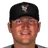
Mark Ellis SB66 - 0
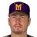
Aaron Rowand MePh - 0Danny Bautista OKC
- 0
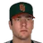
Ryan Ludwick ORLJ - 0
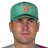
Tim Salmon HONO - 0
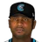
Craig Monroe ChKn
Best fielding % (non-pitchers)
- 1.000Adrian Gonzalez MePh
- 1.000Jorge Cantu SaSa
- 1.000Mark Ellis SB66
- 1.000Aaron Rowand MePh
- 1.000Danny Bautista OKC
- 1.000Ryan Ludwick ORLJ
- 1.000Tim Salmon HONO
- 1.000Craig Monroe ChKn
Catcher caught-stealing %
- 46.2%Benito Santiago SACR
- 44.1%
 Paul Lo Duca OKC
Paul Lo Duca OKC - 39.4%
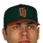
Johnny Estrada ORLJ - 37.1%
 Mike Lieberthal CDT
Mike Lieberthal CDT - 36.4%Darrin Fletcher SARe
- 33.3%David Ross MONT
- 32.6%Chad Moeller SaSa
- 32.3%
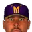
Ramon Hernandez MePh
Catcher framing runs
- 2.2
 Todd Pratt ALSK
Todd Pratt ALSK - 1.9Chad Moeller SaSa
- 1.8
 Mike Redmond VANC
Mike Redmond VANC - 1.5
 Mike Kinkade HOBK
Mike Kinkade HOBK - 1.1Charles Johnson HONO
- 0.9Greg Colbrunn RiFS
- 0.7Craig Wilson EUGL
- 0.7Paul Lo Duca OKC
Outfield arm runs
- 5.7Ryan Ludwick ORLJ
- 5.6
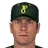
Brady Anderson EUGL - 5.5Jason Tyner MePh
- 5.4Lou Collier HONO
- 5.3
 Damian Rolls SaSa
Damian Rolls SaSa - 4.7Bubba Crosby VANC
- 3.5Danny Bautista OKC
- 3.3Ryan Jackson SaSa
Double plays, 2B/SS
- 23
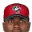
Orlando Hudson SDG - 22Chris Woodward HONO
- 22Wilton Guerrero SARe
- 22
 Jeff Reboulet VANC
Jeff Reboulet VANC - 21
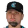
Mike Moriarty ChKn - 21
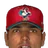
Jose Nieves SDG - 21Mark DeRosa EUGL
- 21
 Junior Spivey ALSK
Junior Spivey ALSK
Zone rating, C
- 2.0Mike Lieberthal CDT
- 2.0
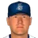
Greg Myers HYG - 1.6Charles Johnson HONO
- 1.6Paul Lo Duca OKC
- 1.5Benito Santiago SACR
- 1.4Darrin Fletcher SARe
- 1.0Mike Kinkade HOBK
- 0.5Chad Moeller SaSa
Zone rating, 1B
- 2.7
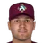
Richie Sexson ALBQ - 2.2Adrian Gonzalez MePh
- 2.0John Olerud EUGL
- 1.2Jorge Cantu SaSa
- 0.7Sean Casey ORLJ
- 0.7Jeremy Giambi SB66
- 0.6
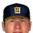
Rusty Greer HOBK - 0.2
 Ray Durham HYG
Ray Durham HYG
Zone rating, 2B
- 5.9Chris Woodward HONO
- 4.9Orlando Hudson SDG
- 3.2Mark Ellis SB66
- 3.2
 Damian Jackson OKC
Damian Jackson OKC - 3.1Junior Spivey ALSK
- 2.9Mark DeRosa EUGL
- 1.3Jeff Reboulet VANC
- 1.3
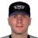
David Eckstein LoBa
Zone rating, SS
- 6.5
 Mike Benjamin ALSK
Mike Benjamin ALSK - 4.1Pablo Sanchez CDT
- 2.1Travis Fryman ChKn
- 1.7
 Barry Larkin LoBa
Barry Larkin LoBa - 0.2
 Ramon Vazquez EUGL
Ramon Vazquez EUGL - 0.2Michael Barrett RiFS
- -0.1
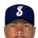
Royce Clayton SACR - -0.4Julio Lugo SARe
Zone rating, 3B
- 2.8
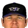
Herb Perry LoBa - 2.5
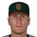
Matt Williams ORLJ - 2.2
 Tom Wilson HOBK
Tom Wilson HOBK - 1.4
 Vinny Castilla MONT
Vinny Castilla MONT - 1.2
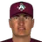
Chris Donnels ALBQ - 1.0Edgardo Alfonzo ChKn
- 0.7Mike Lowell RiFS
- 0.5Ron Coomer EUGL
Zone rating, LF
- 3.4Danny Bautista OKC
- 3.0
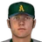
Mark Little ALSK - 2.6
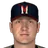
Todd Hollandsworth VANC - 2.5
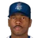
Ellis Burks HYG - 2.1David Dellucci SACR
- 1.8Tsuyoshi Shinjo EUGL
- 1.5Mark Whiten ChKn
- 1.4David Justice ALBQ
Zone rating, CF
- 7.2Andruw Jones LoBa
- 6.4Brian Jordan SARe
- 5.7Brian Hunter SDG
- 3.9Willie Harris ChKn
- 2.5
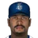
Randy Winn HYG - 1.2
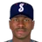
Kenny Lofton SACR - 0.7
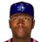
Tom Goodwin CDT - 0.6
 Vernon Wells HOBK
Vernon Wells HOBK
Zone rating, RF
- 6.9Ichiro Suzuki ORLJ
- 5.1
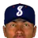
Hiram Bocachica SACR - 4.7Aaron Rowand MePh
- 2.8
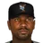
Carl Everett SB66 - 2.5
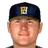
Chris Magruder HOBK - 2.4
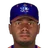
Ken Griffey Jr. CDT - 2.3
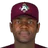
Quinton McCracken ALBQ - 0.9Tim Salmon HONO
| Player | Team | Pos | G | GS | Inn | TC | PO | A | E | DP | Fld% | RF/9 | ZR | Arm | Framing | SB | CS | CS% | PB |
|---|---|---|---|---|---|---|---|---|---|---|---|---|---|---|---|---|---|---|---|
| Justin Morneau | SARe | 1B | 40 | 40 | 354.2 | 337 | 313 | 19 | 5 | 30 | .985 | 8.42 | -3.5 | - | - | - | - | - | - |
| Ryan Klesko | LoBa | 1B | 39 | 39 | 349.0 | 352 | 330 | 21 | 1 | 13 | .997 | 9.05 | -0.7 | - | - | - | - | - | - |
| Adrian Gonzalez | MePh | 1B | 39 | 39 | 346.0 | 336 | 317 | 19 | 0 | 16 | 1.000 | 8.74 | 2.2 | - | - | - | - | - | - |
| Jorge Cantu | SaSa | 1B | 39 | 39 | 344.0 | 319 | 299 | 20 | 0 | 22 | 1.000 | 8.35 | 1.2 | - | - | - | - | - | - |
| Carl Everett | SB66 | RF | 38 | 38 | 343.2 | 85 | 73 | 9 | 3 | 0 | .965 | 2.15 | 2.8 | 2.7 | - | - | - | - | - |
| Luis Castillo | MePh | 2B | 38 | 38 | 343.0 | 196 | 90 | 105 | 1 | 16 | .995 | 5.12 | -2.1 | - | - | - | - | - | - |
| Bobby Crosby | OKC | SS | 38 | 38 | 340.0 | 193 | 75 | 113 | 5 | 18 | .974 | 4.98 | -2.2 | - | - | - | - | - | - |
| Mark Ellis | SB66 | 2B | 38 | 37 | 339.1 | 190 | 85 | 105 | 0 | 13 | 1.000 | 5.04 | 3.2 | - | - | - | - | - | - |
| John Olerud | EUGL | 1B | 40 | 40 | 339.1 | 365 | 338 | 24 | 3 | 30 | .992 | 9.60 | 2.0 | - | - | - | - | - | - |
| Orlando Hudson | SDG | 2B | 39 | 38 | 336.1 | 187 | 79 | 104 | 4 | 23 | .979 | 4.90 | 4.9 | - | - | - | - | - | - |
| Pete Zoccolillo | SARe | 3B | 38 | 38 | 334.2 | 102 | 25 | 70 | 7 | 8 | .931 | 2.55 | -2.1 | - | - | - | - | - | - |
| Trot Nixon | SDG | LF | 38 | 38 | 334.1 | 76 | 71 | 4 | 1 | 0 | .987 | 2.02 | -1.3 | -0.2 | - | - | - | - | - |
| Brian Jordan | SARe | CF | 39 | 37 | 333.2 | 131 | 120 | 9 | 2 | 0 | .985 | 3.48 | 6.4 | 1.1 | - | - | - | - | - |
| Chris Woodward | HONO | 2B | 38 | 38 | 333.1 | 194 | 65 | 126 | 3 | 22 | .985 | 5.16 | 5.9 | - | - | - | - | - | - |
| Royce Clayton | SACR | SS | 38 | 37 | 332.1 | 178 | 58 | 114 | 6 | 14 | .966 | 4.66 | -0.1 | - | - | - | - | - | - |
| Barry Larkin | LoBa | SS | 37 | 37 | 332.0 | 172 | 57 | 108 | 7 | 10 | .959 | 4.47 | 1.7 | - | - | - | - | - | - |
| Mark Little | ALSK | LF | 39 | 38 | 331.2 | 83 | 77 | 5 | 1 | 0 | .988 | 2.23 | 3.0 | 0.3 | - | - | - | - | - |
| Andruw Jones | LoBa | CF | 37 | 37 | 331.0 | 127 | 121 | 5 | 1 | 0 | .992 | 3.43 | 7.2 | 0.4 | - | - | - | - | - |
| Kevin Orie | SDG | 3B | 39 | 38 | 330.1 | 85 | 26 | 56 | 3 | 4 | .965 | 2.23 | -0.1 | - | - | - | - | - | - |
| Bubba Crosby | VANC | CF | 38 | 38 | 330.0 | 112 | 111 | 0 | 1 | 0 | .991 | 3.03 | -5.3 | 4.7 | - | - | - | - | - |
| Brian Hunter | SDG | CF | 38 | 38 | 328.1 | 120 | 112 | 5 | 3 | 1 | .975 | 3.21 | 5.7 | 1.5 | - | - | - | - | - |
| Garret Anderson | SaSa | LF | 38 | 38 | 328.0 | 78 | 75 | 2 | 1 | 0 | .987 | 2.11 | -3.2 | -1.6 | - | - | - | - | - |
| Aaron Rowand | MePh | RF | 38 | 38 | 327.2 | 105 | 98 | 7 | 0 | 0 | 1.000 | 2.88 | 4.7 | 1.1 | - | - | - | - | - |
| Danny Bautista | OKC | LF | 39 | 38 | 326.0 | 71 | 69 | 2 | 0 | 0 | 1.000 | 1.96 | 3.4 | 3.5 | - | - | - | - | - |
| Todd Hollandsworth | VANC | LF | 38 | 38 | 326.0 | 78 | 74 | 2 | 2 | 0 | .974 | 2.10 | 2.6 | -0.4 | - | - | - | - | - |
| Mike Moriarty | ChKn | 2B | 38 | 37 | 325.2 | 173 | 76 | 93 | 4 | 21 | .977 | 4.67 | -3.4 | - | - | - | - | - | - |
| Pablo Sanchez | CDT | SS | 38 | 38 | 325.0 | 177 | 64 | 108 | 5 | 17 | .972 | 4.76 | 4.1 | - | - | - | - | - | - |
| Ryan Ludwick | ORLJ | CF | 39 | 38 | 324.2 | 104 | 103 | 1 | 0 | 0 | 1.000 | 2.88 | -1.8 | 5.7 | - | - | - | - | - |
| Damian Rolls | SaSa | CF | 38 | 38 | 324.0 | 106 | 102 | 1 | 3 | 1 | .972 | 2.86 | -3.0 | 5.3 | - | - | - | - | - |
| Tim Salmon | HONO | RF | 37 | 37 | 323.2 | 81 | 73 | 8 | 0 | 2 | 1.000 | 2.25 | 0.9 | 1.9 | - | - | - | - | - |
| Kenny Lofton | SACR | CF | 37 | 36 | 323.1 | 120 | 111 | 5 | 4 | 0 | .967 | 3.23 | 1.2 | 0.7 | - | - | - | - | - |
| Michael Barrett | RiFS | SS | 38 | 38 | 323.0 | 166 | 50 | 111 | 5 | 10 | .970 | 4.49 | 0.2 | - | - | - | - | - | - |
| B.J. Surhoff | HONO | 1B | 37 | 37 | 322.1 | 338 | 315 | 22 | 1 | 21 | .997 | 9.41 | -1.7 | - | - | - | - | - | - |
| Bill Mueller | SaSa | 3B | 40 | 37 | 322.0 | 85 | 26 | 55 | 4 | 7 | .953 | 2.26 | -0.7 | - | - | - | - | - | - |
| Craig Monroe | ChKn | RF | 37 | 36 | 321.1 | 65 | 65 | 0 | 0 | 0 | 1.000 | 1.82 | -6.8 | 3.2 | - | - | - | - | - |
| Hiram Bocachica | SACR | RF | 36 | 36 | 321.1 | 93 | 92 | 1 | 0 | 0 | 1.000 | 2.60 | 5.1 | -0.6 | - | - | - | - | - |
| Sean Casey | ORLJ | 1B | 40 | 40 | 321.0 | 349 | 324 | 24 | 1 | 20 | .997 | 9.76 | 0.7 | - | - | - | - | - | - |
| Damian Jackson | OKC | 2B | 36 | 36 | 321.0 | 196 | 90 | 98 | 8 | 14 | .959 | 5.27 | 3.2 | - | - | - | - | - | - |
| Mark Whiten | ChKn | LF | 36 | 36 | 320.1 | 66 | 64 | 1 | 1 | 0 | .985 | 1.83 | 1.5 | 1.5 | - | - | - | - | - |
| Chad Tracy | CDT | 3B | 38 | 38 | 320.0 | 92 | 21 | 66 | 5 | 7 | .946 | 2.45 | 0.5 | - | - | - | - | - | - |
| Gary Sheffield | HYG | SS | 37 | 36 | 319.2 | 181 | 53 | 120 | 8 | 17 | .956 | 4.87 | -3.0 | - | - | - | - | - | - |
| Ichiro Suzuki | ORLJ | RF | 38 | 38 | 319.2 | 97 | 94 | 2 | 1 | 0 | .990 | 2.70 | 6.9 | -1.2 | - | - | - | - | - |
| Ryan Jackson | SaSa | RF | 37 | 37 | 318.0 | 71 | 68 | 1 | 2 | 0 | .972 | 1.95 | -0.9 | 3.3 | - | - | - | - | - |
| Herb Perry | LoBa | 3B | 36 | 36 | 318.0 | 99 | 22 | 77 | 0 | 2 | 1.000 | 2.80 | 2.8 | - | - | - | - | - | - |
| Vinny Castilla | MONT | 3B | 38 | 37 | 317.1 | 94 | 23 | 70 | 1 | 6 | .989 | 2.64 | 1.4 | - | - | - | - | - | - |
| Geoff Jenkins | MePh | LF | 35 | 35 | 316.0 | 72 | 68 | 2 | 2 | 0 | .972 | 1.99 | -1.1 | 0.3 | - | - | - | - | - |
| Mark McLemore | ALBQ | 2B | 36 | 36 | 315.2 | 167 | 74 | 89 | 4 | 17 | .976 | 4.65 | -2.0 | - | - | - | - | - | - |
| Bret Boone | RiFS | 2B | 37 | 37 | 314.0 | 160 | 68 | 90 | 2 | 13 | .988 | 4.53 | -3.0 | - | - | - | - | - | - |
| Chris Donnels | ALBQ | 3B | 36 | 36 | 314.0 | 96 | 30 | 65 | 1 | 6 | .990 | 2.72 | 1.2 | - | - | - | - | - | - |
| Jose Nieves | SDG | SS | 36 | 36 | 313.1 | 157 | 61 | 93 | 3 | 21 | .981 | 4.42 | -1.0 | - | - | - | - | - | - |
| Scott Seabol | SaSa | SS | 37 | 37 | 313.0 | 179 | 62 | 109 | 8 | 15 | .955 | 4.92 | -1.3 | - | - | - | - | - | - |
| Ken Griffey Jr. | CDT | RF | 37 | 36 | 312.0 | 77 | 71 | 3 | 3 | 0 | .961 | 2.13 | 2.4 | 0.9 | - | - | - | - | - |
| Greg Norton | MePh | 3B | 35 | 34 | 311.0 | 95 | 27 | 61 | 7 | 3 | .926 | 2.55 | -0.8 | - | - | - | - | - | - |
| Timo Perez | SB66 | LF | 35 | 35 | 310.2 | 65 | 60 | 4 | 1 | 0 | .985 | 1.85 | -3.8 | 0.5 | - | - | - | - | - |
| Santiago Perez | HYG | 3B | 35 | 35 | 310.2 | 93 | 25 | 55 | 13 | 3 | .860 | 2.32 | -5.7 | - | - | - | - | - | - |
| Tom Goodwin | CDT | CF | 37 | 36 | 310.0 | 117 | 109 | 7 | 1 | 2 | .991 | 3.37 | 0.7 | 1.3 | - | - | - | - | - |
| Brady Anderson | EUGL | CF | 36 | 36 | 310.0 | 98 | 98 | 0 | 0 | 0 | 1.000 | 2.85 | -2.9 | 5.6 | - | - | - | - | - |
| Jeff Bagwell | MONT | 1B | 38 | 38 | 308.1 | 316 | 292 | 22 | 2 | 20 | .994 | 9.17 | -1.6 | - | - | - | - | - | - |
| Matt Williams | ORLJ | 3B | 38 | 37 | 307.2 | 112 | 35 | 74 | 3 | 3 | .973 | 3.19 | 2.5 | - | - | - | - | - | - |
| Jay Bell | MONT | SS | 36 | 36 | 307.0 | 174 | 56 | 110 | 8 | 14 | .954 | 4.87 | -2.3 | - | - | - | - | - | - |
| Tony Tarasco | HONO | LF | 35 | 35 | 306.2 | 68 | 63 | 3 | 2 | 1 | .971 | 1.94 | -1.6 | -0.0 | - | - | - | - | - |
| Edgardo Alfonzo | ChKn | 3B | 34 | 34 | 305.1 | 81 | 19 | 60 | 2 | 4 | .975 | 2.33 | 1.0 | - | - | - | - | - | - |
| Orlando Cabrera | CDT | 2B | 37 | 36 | 305.0 | 205 | 78 | 122 | 5 | 20 | .976 | 5.90 | -0.0 | - | - | - | - | - | - |
| Randy Winn | HYG | CF | 35 | 34 | 303.2 | 113 | 109 | 3 | 1 | 0 | .991 | 3.32 | 2.5 | -1.8 | - | - | - | - | - |
| David Eckstein | LoBa | 2B | 34 | 34 | 303.0 | 176 | 77 | 95 | 4 | 10 | .977 | 5.11 | 1.3 | - | - | - | - | - | - |
| Morgan Burkhart | SDG | 1B | 36 | 35 | 302.1 | 292 | 260 | 32 | 0 | 21 | 1.000 | 8.69 | -1.5 | - | - | - | - | - | - |
| Terrence Long | CDT | LF | 35 | 35 | 301.0 | 70 | 63 | 2 | 5 | 0 | .929 | 1.94 | 1.0 | -1.0 | - | - | - | - | - |
| Jason Tyner | MePh | CF | 35 | 34 | 300.0 | 84 | 82 | 2 | 0 | 0 | 1.000 | 2.52 | -2.5 | 5.5 | - | - | - | - | - |
| Robert Machado | SB66 | C | 33 | 33 | 299.2 | 270 | 254 | 16 | 0 | 1 | 1.000 | 8.11 | -2.3 | - | 0.3 | 36 | 6 | 14.3 | 3 |
| Quinton McCracken | ALBQ | RF | 34 | 34 | 299.1 | 86 | 75 | 6 | 5 | 2 | .942 | 2.44 | 2.3 | 0.9 | - | - | - | - | - |
| McKay Christensen | SB66 | CF | 37 | 33 | 299.1 | 94 | 90 | 0 | 4 | 0 | .957 | 2.71 | -3.9 | 3.1 | - | - | - | - | - |
| David Justice | ALBQ | LF | 34 | 34 | 299.0 | 63 | 59 | 4 | 0 | 0 | 1.000 | 1.90 | 1.4 | 0.8 | - | - | - | - | - |
| Lyle Overbay | CDT | 1B | 35 | 35 | 298.2 | 302 | 274 | 22 | 6 | 22 | .980 | 8.92 | -3.4 | - | - | - | - | - | - |
| Ramon Hernandez | MePh | C | 33 | 33 | 298.1 | 238 | 210 | 26 | 2 | 1 | .992 | 7.12 | -0.2 | - | -2.2 | 21 | 10 | 32.3 | 8 |
| Ron Coomer | EUGL | 3B | 34 | 34 | 297.1 | 97 | 32 | 61 | 4 | 5 | .959 | 2.82 | 0.5 | - | - | - | - | - | - |
| Jeremy Giambi | SB66 | 1B | 37 | 37 | 296.2 | 312 | 291 | 21 | 0 | 18 | 1.000 | 9.47 | 0.7 | - | - | - | - | - | - |
| Mike Kinkade | HOBK | C | 33 | 33 | 294.2 | 199 | 168 | 31 | 0 | 0 | 1.000 | 6.08 | 1.0 | - | 1.5 | 37 | 16 | 30.2 | 3 |
| Travis Fryman | ChKn | SS | 33 | 33 | 294.2 | 142 | 46 | 96 | 0 | 13 | 1.000 | 4.34 | 2.1 | - | - | - | - | - | - |
| Lou Merloni | MePh | SS | 33 | 33 | 294.0 | 154 | 57 | 93 | 4 | 11 | .974 | 4.59 | -2.3 | - | - | - | - | - | - |
| Ronnie Belliard | HYG | 2B | 34 | 34 | 293.2 | 165 | 74 | 88 | 3 | 17 | .982 | 4.96 | -3.0 | - | - | - | - | - | - |
| Victor Martinez | SDG | C | 34 | 33 | 292.0 | 265 | 241 | 22 | 2 | 1 | .992 | 8.11 | 0.2 | - | -2.7 | 30 | 13 | 30.2 | 3 |
| Augie Ojeda | MONT | 2B | 34 | 33 | 291.1 | 139 | 61 | 75 | 3 | 14 | .978 | 4.20 | -2.0 | - | - | - | - | - | - |
| Charles Johnson | HONO | C | 33 | 33 | 290.1 | 240 | 215 | 23 | 2 | 2 | .992 | 7.38 | 1.6 | - | 1.1 | 31 | 13 | 29.5 | 2 |
| Chad Moeller | SaSa | C | 33 | 33 | 290.0 | 252 | 232 | 20 | 0 | 3 | 1.000 | 7.82 | 0.5 | - | 1.9 | 31 | 15 | 32.6 | 5 |
| Mark DeRosa | EUGL | 2B | 34 | 34 | 289.1 | 176 | 76 | 95 | 5 | 21 | .972 | 5.32 | 2.9 | - | - | - | - | - | - |
| Richie Sexson | ALBQ | 1B | 33 | 33 | 289.0 | 295 | 261 | 33 | 1 | 23 | .997 | 9.16 | 2.7 | - | - | - | - | - | - |
| Tsuyoshi Shinjo | EUGL | LF | 34 | 34 | 288.0 | 82 | 73 | 7 | 2 | 1 | .976 | 2.50 | 1.8 | 0.8 | - | - | - | - | - |
| Doug Mirabelli | LoBa | C | 32 | 32 | 287.0 | 248 | 225 | 23 | 0 | 0 | 1.000 | 7.78 | -2.1 | - | -0.9 | 32 | 10 | 23.8 | 7 |
| Craig Wilson | EUGL | C | 33 | 33 | 286.1 | 207 | 189 | 17 | 1 | 0 | .995 | 6.47 | -0.4 | - | 0.7 | 23 | 5 | 17.9 | 2 |
| Jose Vidro | SaSa | 2B | 34 | 33 | 285.0 | 161 | 74 | 85 | 2 | 19 | .988 | 5.02 | -3.5 | - | - | - | - | - | - |
| Mike Redmond | VANC | C | 33 | 33 | 285.0 | 222 | 206 | 15 | 1 | 2 | .995 | 6.98 | -0.3 | - | 1.8 | 39 | 7 | 15.2 | 1 |
| Greg Colbrunn | RiFS | C | 32 | 32 | 284.0 | 224 | 195 | 25 | 4 | 2 | .982 | 6.97 | -0.6 | - | 0.9 | 34 | 9 | 20.9 | 3 |
| Lou Collier | HONO | CF | 32 | 32 | 281.1 | 100 | 98 | 0 | 2 | 0 | .980 | 3.14 | -3.2 | 5.4 | - | - | - | - | - |
| Mike Lowell | RiFS | 3B | 34 | 33 | 281.0 | 91 | 22 | 67 | 2 | 8 | .978 | 2.85 | 0.7 | - | - | - | - | - | - |
| Wilton Guerrero | SARe | 2B | 33 | 31 | 280.2 | 152 | 69 | 83 | 0 | 22 | 1.000 | 4.87 | -3.7 | - | - | - | - | - | - |
| Eddie Perez | ChKn | C | 32 | 31 | 280.1 | 251 | 232 | 19 | 0 | 1 | 1.000 | 8.06 | 0.0 | - | 0.4 | 22 | 7 | 24.1 | 3 |
| Darrin Fletcher | SARe | C | 31 | 31 | 275.2 | 250 | 225 | 25 | 0 | 0 | 1.000 | 8.16 | 1.4 | - | 0.1 | 21 | 12 | 36.4 | 3 |
| Mike Lieberthal | CDT | C | 33 | 32 | 274.2 | 220 | 197 | 22 | 1 | 3 | .995 | 7.18 | 2.0 | - | 0.1 | 22 | 13 | 37.1 | 2 |
| Ray Durham | HYG | 1B | 32 | 32 | 273.2 | 274 | 260 | 11 | 3 | 15 | .989 | 8.91 | 0.2 | - | - | - | - | - | - |
| Ramon Vazquez | EUGL | SS | 32 | 32 | 272.0 | 167 | 50 | 112 | 5 | 19 | .970 | 5.36 | 0.2 | - | - | - | - | - | - |
| David Dellucci | SACR | LF | 32 | 30 | 270.1 | 67 | 64 | 2 | 1 | 0 | .985 | 2.20 | 2.1 | -0.8 | - | - | - | - | - |
| Julio Lugo | SARe | SS | 31 | 30 | 268.2 | 139 | 50 | 84 | 5 | 17 | .964 | 4.49 | -0.4 | - | - | - | - | - | - |
| Mike Benjamin | ALSK | SS | 32 | 31 | 268.1 | 165 | 55 | 106 | 4 | 15 | .976 | 5.40 | 6.5 | - | - | - | - | - | - |
| Junior Spivey | ALSK | 2B | 32 | 30 | 267.1 | 133 | 52 | 80 | 1 | 21 | .992 | 4.44 | 3.1 | - | - | - | - | - | - |
| Jeff Reboulet | VANC | 2B | 32 | 31 | 266.2 | 152 | 61 | 86 | 5 | 22 | .967 | 4.96 | 1.3 | - | - | - | - | - | - |
| Chad Kreuter | ALBQ | C | 30 | 30 | 266.0 | 209 | 196 | 13 | 0 | 1 | 1.000 | 7.07 | 0.2 | - | 0.1 | 28 | 6 | 17.6 | 3 |
| Ellis Burks | HYG | LF | 30 | 30 | 263.2 | 56 | 55 | 1 | 0 | 0 | 1.000 | 1.91 | 2.5 | -0.2 | - | - | - | - | - |
| Willie Harris | ChKn | CF | 30 | 30 | 261.0 | 97 | 91 | 2 | 4 | 0 | .959 | 3.21 | 3.9 | -0.6 | - | - | - | - | - |
| Rusty Greer | HOBK | 1B | 31 | 31 | 260.1 | 292 | 273 | 19 | 0 | 17 | 1.000 | 10.09 | 0.6 | - | - | - | - | - | - |
| Todd Pratt | ALSK | C | 29 | 29 | 255.1 | 199 | 183 | 14 | 2 | 2 | .990 | 6.94 | -2.5 | - | 2.2 | 32 | 5 | 13.5 | 2 |
| Tom Wilson | HOBK | 3B | 30 | 29 | 255.0 | 79 | 17 | 60 | 2 | 2 | .975 | 2.72 | 2.2 | - | - | - | - | - | - |
| Armando Rios | EUGL | RF | 30 | 30 | 253.0 | 54 | 51 | 0 | 3 | 0 | .944 | 1.81 | -0.5 | -0.9 | - | - | - | - | - |
| Vernon Wells | HOBK | CF | 30 | 29 | 253.0 | 95 | 89 | 4 | 2 | 1 | .979 | 3.31 | 0.6 | -0.1 | - | - | - | - | - |
| Reggie Sanders | HOBK | LF | 30 | 29 | 252.2 | 66 | 64 | 1 | 1 | 0 | .985 | 2.32 | 0.6 | -1.7 | - | - | - | - | - |
| Michael Young | HOBK | SS | 29 | 29 | 252.2 | 162 | 60 | 97 | 5 | 14 | .969 | 5.59 | -1.5 | - | - | - | - | - | - |
| Chris Magruder | HOBK | RF | 28 | 28 | 245.0 | 67 | 61 | 5 | 1 | 0 | .985 | 2.42 | 2.5 | 1.2 | - | - | - | - | - |
| Justin Baughman | HONO | SS | 28 | 28 | 242.0 | 129 | 50 | 75 | 4 | 12 | .969 | 4.65 | -1.1 | - | - | - | - | - | - |
| David Ross | MONT | C | 28 | 28 | 241.0 | 204 | 187 | 16 | 1 | 1 | .995 | 7.58 | -0.4 | - | -0.9 | 16 | 8 | 33.3 | 3 |
| Luis Rivas | SB66 | SS | 31 | 31 | 240.0 | 119 | 37 | 79 | 3 | 7 | .975 | 4.35 | -0.3 | - | - | - | - | - | - |
| Greg Myers | HYG | C | 27 | 27 | 239.2 | 201 | 178 | 23 | 0 | 2 | 1.000 | 7.55 | 2.0 | - | -0.7 | 19 | 9 | 32.1 | 1 |
| Olmedo Saenz | SACR | 3B | 27 | 27 | 238.1 | 78 | 17 | 57 | 4 | 3 | .949 | 2.79 | -0.5 | - | - | - | - | - | - |
| Corey Patterson | RiFS | LF | 28 | 27 | 235.0 | 71 | 68 | 1 | 2 | 1 | .972 | 2.64 | 2.2 | -0.1 | - | - | - | - | - |
| Benito Santiago | SACR | C | 26 | 26 | 233.0 | 175 | 159 | 15 | 1 | 2 | .994 | 6.72 | 1.5 | - | 0.5 | 14 | 12 | 46.2 | 3 |
| Jamey Carroll | OKC | 3B | 26 | 26 | 230.0 | 73 | 13 | 58 | 2 | 1 | .973 | 2.78 | -0.3 | - | - | - | - | - | - |
| Gary Matthews | SARe | LF | 30 | 25 | 228.2 | 49 | 46 | 1 | 2 | 0 | .959 | 1.85 | 2.1 | -0.4 | - | - | - | - | - |
| Eric Owens | RiFS | CF | 26 | 26 | 226.0 | 89 | 82 | 4 | 3 | 0 | .966 | 3.42 | 2.0 | -0.3 | - | - | - | - | - |
| Jose Guillen | HYG | RF | 26 | 26 | 225.2 | 51 | 49 | 1 | 1 | 0 | .980 | 1.99 | -1.0 | -0.2 | - | - | - | - | - |
| Deivi Cruz | VANC | SS | 26 | 26 | 225.0 | 121 | 29 | 89 | 3 | 14 | .975 | 4.72 | 1.7 | - | - | - | - | - | - |
| Abraham Nunez | SB66 | 3B | 28 | 28 | 221.0 | 69 | 14 | 53 | 2 | 2 | .971 | 2.73 | 3.0 | - | - | - | - | - | - |
| Juan Castro | HOBK | 2B | 25 | 25 | 214.0 | 119 | 54 | 62 | 3 | 11 | .975 | 4.88 | 0.7 | - | - | - | - | - | - |
| Marcus Thames | VANC | RF | 26 | 25 | 213.0 | 39 | 38 | 0 | 1 | 0 | .974 | 1.61 | -2.4 | 2.7 | - | - | - | - | - |
| Geronimo Berroa | ORLJ | LF | 27 | 27 | 213.0 | 48 | 48 | 0 | 0 | 0 | 1.000 | 2.03 | -5.4 | 2.6 | - | - | - | - | - |
| Homer Bush | HONO | 3B | 24 | 24 | 210.2 | 61 | 12 | 48 | 1 | 3 | .984 | 2.56 | 2.0 | - | - | - | - | - | - |
| Wendell Magee | LoBa | RF | 24 | 24 | 210.0 | 49 | 43 | 5 | 1 | 1 | .980 | 2.06 | 1.4 | 0.5 | - | - | - | - | - |
| Aubrey Huff | SACR | 1B | 25 | 24 | 209.1 | 202 | 185 | 17 | 0 | 10 | 1.000 | 8.68 | 0.5 | - | - | - | - | - | - |
| Reggie Taylor | RiFS | RF | 24 | 24 | 209.0 | 48 | 45 | 2 | 1 | 0 | .979 | 2.02 | 2.4 | -0.0 | - | - | - | - | - |
| Edgar Martinez | VANC | 3B | 24 | 24 | 209.0 | 64 | 14 | 49 | 1 | 5 | .984 | 2.71 | 2.5 | - | - | - | - | - | - |
| Brian Hunter | MONT | RF | 24 | 24 | 208.1 | 45 | 44 | 1 | 0 | 0 | 1.000 | 1.94 | -0.2 | 1.9 | - | - | - | - | - |
| Ben Grieve | OKC | RF | 23 | 23 | 207.0 | 47 | 41 | 5 | 1 | 2 | .979 | 2.00 | -1.9 | -0.0 | - | - | - | - | - |
| Dave Roberts | MONT | CF | 24 | 24 | 206.1 | 78 | 73 | 5 | 0 | 0 | 1.000 | 3.40 | 3.2 | -1.2 | - | - | - | - | - |
| Mike Lansing | ORLJ | SS | 24 | 24 | 206.0 | 102 | 26 | 74 | 2 | 9 | .980 | 4.37 | -0.1 | - | - | - | - | - | - |
| Gary DiSarcina | SACR | 2B | 23 | 23 | 202.0 | 111 | 49 | 59 | 3 | 12 | .973 | 4.81 | -0.7 | - | - | - | - | - | - |
| Joe McEwing | LoBa | LF | 23 | 23 | 199.0 | 53 | 49 | 3 | 1 | 0 | .981 | 2.35 | 2.0 | -0.3 | - | - | - | - | - |
| Alex Ochoa | MONT | LF | 23 | 23 | 197.1 | 50 | 47 | 1 | 2 | 0 | .960 | 2.19 | -2.4 | -0.0 | - | - | - | - | - |
| Paul Lo Duca | OKC | C | 25 | 21 | 197.0 | 173 | 151 | 20 | 2 | 1 | .988 | 7.81 | 1.6 | - | 0.7 | 19 | 15 | 44.1 | 0 |
| Darin Erstad | ALBQ | CF | 22 | 22 | 196.1 | 80 | 74 | 6 | 0 | 1 | 1.000 | 3.67 | 6.1 | 1.5 | - | - | - | - | - |
| Bryant Nelson | OKC | CF | 23 | 23 | 194.0 | 63 | 63 | 0 | 0 | 0 | 1.000 | 2.92 | -2.8 | 5.1 | - | - | - | - | - |
| Johnny Estrada | ORLJ | C | 23 | 23 | 193.2 | 135 | 112 | 20 | 3 | 2 | .978 | 6.13 | -0.1 | - | -0.8 | 20 | 13 | 39.4 | 1 |
| Ricky Ledee | SDG | RF | 22 | 22 | 192.0 | 39 | 35 | 4 | 0 | 0 | 1.000 | 1.83 | -1.3 | 1.8 | - | - | - | - | - |
| Alfonso Soriano | ORLJ | 2B | 24 | 22 | 190.0 | 112 | 51 | 61 | 0 | 9 | 1.000 | 5.31 | 1.5 | - | - | - | - | - | - |
| Jacob Cruz | SARe | RF | 20 | 20 | 181.0 | 30 | 30 | 0 | 0 | 0 | 1.000 | 1.49 | -2.5 | 4.4 | - | - | - | - | - |
| Casey Blake | ALSK | RF | 21 | 21 | 178.2 | 47 | 46 | 1 | 0 | 0 | 1.000 | 2.37 | -2.8 | 1.4 | - | - | - | - | - |
| Jason Conti | SARe | RF | 20 | 19 | 169.2 | 51 | 46 | 5 | 0 | 0 | 1.000 | 2.71 | 2.2 | -0.1 | - | - | - | - | - |
| John McDonald | ALSK | 3B | 20 | 20 | 169.1 | 49 | 14 | 34 | 1 | 2 | .980 | 2.55 | 1.1 | - | - | - | - | - | - |
| Rontrez Johnson | ALSK | CF | 19 | 19 | 162.2 | 53 | 53 | 0 | 0 | 0 | 1.000 | 2.93 | -1.5 | 1.3 | - | - | - | - | - |
| Dave Hansen | ALSK | 1B | 19 | 18 | 158.1 | 151 | 137 | 12 | 2 | 12 | .987 | 8.47 | 0.7 | - | - | - | - | - | - |
| Mark Loretta | SACR | 2B | 20 | 17 | 155.1 | 90 | 42 | 47 | 1 | 9 | .989 | 5.16 | -1.0 | - | - | - | - | - | - |
| Mark Bellhorn | VANC | 1B | 18 | 18 | 153.0 | 170 | 159 | 10 | 1 | 10 | .994 | 9.94 | 0.7 | - | - | - | - | - | - |
| Bill Haselman | OKC | C | 18 | 18 | 152.0 | 132 | 117 | 14 | 1 | 1 | .992 | 7.76 | 0.4 | - | 2.0 | 17 | 9 | 34.6 | 1 |
| Jesse Garcia | ALBQ | SS | 17 | 17 | 148.0 | 76 | 31 | 43 | 2 | 6 | .974 | 4.50 | 0.8 | - | - | - | - | - | - |
| Jared Sandberg | ORLJ | 2B | 20 | 18 | 146.2 | 74 | 32 | 39 | 3 | 8 | .959 | 4.36 | -1.5 | - | - | - | - | - | - |
| Andy Phillips | ChKn | 1B | 17 | 17 | 145.2 | 138 | 126 | 11 | 1 | 5 | .993 | 8.46 | 0.0 | - | - | - | - | - | - |
| Craig Biggio | MONT | CF | 17 | 16 | 143.0 | 55 | 49 | 4 | 2 | 0 | .964 | 3.34 | -1.8 | 1.3 | - | - | - | - | - |
| Howie Clark | ALBQ | CF | 16 | 16 | 139.0 | 36 | 36 | 0 | 0 | 0 | 1.000 | 2.33 | -3.9 | 4.1 | - | - | - | - | - |
| Casey Blake | ALSK | 1B | 16 | 16 | 139.0 | 148 | 141 | 6 | 1 | 11 | .993 | 9.52 | -1.1 | - | - | - | - | - | - |
| Jason Conti | SARe | LF | 16 | 16 | 137.0 | 22 | 22 | 0 | 0 | 0 | 1.000 | 1.45 | -0.2 | 1.3 | - | - | - | - | - |
| Bucky Jacobsen | VANC | 1B | 16 | 16 | 136.0 | 137 | 130 | 7 | 0 | 14 | 1.000 | 9.07 | 0.1 | - | - | - | - | - | - |
| John Flaherty | SACR | C | 15 | 15 | 134.1 | 101 | 87 | 13 | 1 | 0 | .990 | 6.70 | 1.0 | - | 0.4 | 11 | 6 | 35.3 | 0 |
| Frank Thomas | OKC | 1B | 17 | 17 | 134.0 | 130 | 124 | 6 | 0 | 5 | 1.000 | 8.73 | -0.2 | - | - | - | - | - | - |
| Alfonso Soriano | ORLJ | SS | 17 | 16 | 133.2 | 80 | 27 | 52 | 1 | 7 | .988 | 5.32 | -1.1 | - | - | - | - | - | - |
| Ryan Freel | SDG | RF | 16 | 15 | 132.1 | 28 | 28 | 0 | 0 | 0 | 1.000 | 1.90 | -2.3 | 1.2 | - | - | - | - | - |
| Mario Valdez | ChKn | 1B | 15 | 15 | 132.0 | 125 | 119 | 4 | 2 | 10 | .984 | 8.39 | -0.6 | - | - | - | - | - | - |
| Alex Ochoa | MONT | RF | 15 | 15 | 132.0 | 31 | 27 | 4 | 0 | 0 | 1.000 | 2.11 | -2.3 | 0.8 | - | - | - | - | - |
| Todd Zeile | RiFS | 1B | 15 | 15 | 131.0 | 138 | 126 | 12 | 0 | 6 | 1.000 | 9.48 | 1.2 | - | - | - | - | - | - |
| Julio Hernandez | ALBQ | SS | 14 | 14 | 123.0 | 78 | 29 | 47 | 2 | 11 | .974 | 5.56 | -0.9 | - | - | - | - | - | - |
| Mike Difelice | ORLJ | C | 14 | 14 | 121.0 | 87 | 82 | 5 | 0 | 0 | 1.000 | 6.47 | -0.9 | - | 0.9 | 17 | 4 | 19.0 | 0 |
| Joe McEwing | LoBa | RF | 13 | 13 | 117.0 | 29 | 28 | 0 | 1 | 0 | .966 | 2.15 | 1.9 | -0.4 | - | - | - | - | - |
| Paul Lo Duca | OKC | 1B | 14 | 14 | 117.0 | 109 | 101 | 8 | 0 | 7 | 1.000 | 8.38 | 0.9 | - | - | - | - | - | - |
| Dave Roberts | MONT | LF | 13 | 13 | 115.0 | 26 | 25 | 1 | 0 | 1 | 1.000 | 2.03 | 1.2 | -0.6 | - | - | - | - | - |
| Mike Colangelo | OKC | RF | 14 | 13 | 115.0 | 23 | 22 | 0 | 1 | 0 | .957 | 1.72 | -5.3 | 1.2 | - | - | - | - | - |
| Brent Mayne | HYG | C | 13 | 13 | 114.0 | 94 | 82 | 12 | 0 | 2 | 1.000 | 7.42 | 0.9 | - | -0.1 | 12 | 7 | 36.8 | 1 |
| Ed Sprague | OKC | 1B | 18 | 10 | 110.0 | 112 | 102 | 10 | 0 | 9 | 1.000 | 9.16 | 0.7 | - | - | - | - | - | - |
| Doug Mientkiewicz | RiFS | 1B | 12 | 12 | 107.0 | 112 | 102 | 10 | 0 | 5 | 1.000 | 9.42 | 0.5 | - | - | - | - | - | - |
| Reggie Taylor | RiFS | LF | 13 | 13 | 107.0 | 30 | 30 | 0 | 0 | 0 | 1.000 | 2.52 | 0.8 | 1.1 | - | - | - | - | - |
| Mark Quinn | SB66 | 3B | 11 | 11 | 106.0 | 27 | 5 | 22 | 0 | 1 | 1.000 | 2.29 | 0.5 | - | - | - | - | - | - |
| Ryan McGuire | VANC | RF | 14 | 12 | 106.0 | 25 | 25 | 0 | 0 | 0 | 1.000 | 2.12 | -3.6 | 1.2 | - | - | - | - | - |
| Robby Hammock | ALSK | C | 12 | 12 | 105.0 | 77 | 66 | 11 | 0 | 1 | 1.000 | 6.60 | 0.8 | - | -0.3 | 12 | 7 | 36.8 | 0 |
| Mark Loretta | SACR | 1B | 12 | 12 | 104.0 | 103 | 94 | 9 | 0 | 7 | 1.000 | 8.91 | 0.4 | - | - | - | - | - | - |
| Wendell Magee | LoBa | LF | 12 | 12 | 103.0 | 17 | 17 | 0 | 0 | 0 | 1.000 | 1.49 | 0.8 | -0.5 | - | - | - | - | - |
| Bubba Carpenter | ORLJ | LF | 13 | 12 | 102.2 | 15 | 14 | 0 | 1 | 0 | .933 | 1.23 | -3.3 | 1.0 | - | - | - | - | - |
| Eric Hinske | RiFS | 1B | 15 | 12 | 101.0 | 117 | 111 | 6 | 0 | 6 | 1.000 | 10.43 | 0.8 | - | - | - | - | - | - |
| Deivi Cruz | VANC | 3B | 12 | 11 | 100.0 | 37 | 6 | 30 | 1 | 3 | .973 | 3.24 | 1.8 | - | - | - | - | - | - |
| Corey Patterson | RiFS | CF | 13 | 11 | 99.0 | 45 | 42 | 2 | 1 | 1 | .978 | 4.00 | -1.7 | 0.0 | - | - | - | - | - |
| Jody Gerut | ALSK | CF | 11 | 11 | 99.0 | 29 | 28 | 1 | 0 | 0 | 1.000 | 2.64 | 0.6 | 0.7 | - | - | - | - | - |
| Abraham Nunez | SB66 | SS | 20 | 7 | 98.1 | 62 | 16 | 45 | 1 | 7 | .984 | 5.58 | 2.6 | - | - | - | - | - | - |
| Craig Biggio | MONT | C | 11 | 11 | 98.0 | 77 | 74 | 2 | 1 | 0 | .987 | 6.98 | -0.5 | - | 0.4 | 10 | 0 | 0.0 | 1 |
| Rontrez Johnson | ALSK | RF | 11 | 11 | 98.0 | 31 | 31 | 0 | 0 | 0 | 1.000 | 2.85 | -2.0 | 1.1 | - | - | - | - | - |
| Juan Castro | HOBK | 3B | 11 | 11 | 97.0 | 26 | 8 | 16 | 2 | 2 | .923 | 2.23 | -0.0 | - | - | - | - | - | - |
| Dave Hansen | ALSK | CF | 11 | 11 | 96.0 | 33 | 32 | 0 | 1 | 0 | .970 | 3.00 | -0.2 | -0.4 | - | - | - | - | - |
| Mark Bellhorn | VANC | SS | 11 | 11 | 94.0 | 51 | 19 | 31 | 1 | 5 | .980 | 4.79 | 0.5 | - | - | - | - | - | - |
| Brook Fordyce | OKC | CF | 11 | 11 | 93.0 | 38 | 36 | 2 | 0 | 0 | 1.000 | 3.68 | -2.4 | -0.3 | - | - | - | - | - |
| John McDonald | ALSK | SS | 11 | 10 | 92.0 | 45 | 10 | 33 | 2 | 6 | .956 | 4.21 | 0.6 | - | - | - | - | - | - |
| Gregg Zaun | SARe | C | 11 | 10 | 92.0 | 79 | 76 | 3 | 0 | 0 | 1.000 | 7.73 | -0.7 | - | 0.5 | 10 | 1 | 9.1 | 1 |
| Eric Owens | RiFS | RF | 11 | 11 | 91.0 | 22 | 21 | 1 | 0 | 0 | 1.000 | 2.18 | 0.7 | -0.5 | - | - | - | - | - |
| Ryan Christenson | SACR | LF | 11 | 10 | 86.0 | 22 | 22 | 0 | 0 | 0 | 1.000 | 2.30 | -2.3 | 0.8 | - | - | - | - | - |
| Blake Barthol | ChKn | C | 10 | 10 | 85.0 | 70 | 67 | 3 | 0 | 0 | 1.000 | 7.41 | -0.7 | - | -0.4 | 7 | 1 | 12.5 | 3 |
| Travis Dawkins | HONO | 3B | 10 | 10 | 81.1 | 19 | 7 | 12 | 0 | 2 | 1.000 | 2.10 | -0.3 | - | - | - | - | - | - |
| Jose Guillen | HYG | LF | 9 | 9 | 81.0 | 17 | 14 | 2 | 1 | 0 | .941 | 1.78 | -0.0 | 0.8 | - | - | - | - | - |
| Gary Bennett | ALBQ | C | 9 | 9 | 80.0 | 59 | 55 | 3 | 1 | 1 | .983 | 6.53 | -0.3 | - | 0.0 | 8 | 2 | 20.0 | 2 |
| Matt Holliday | OKC | 3B | 9 | 9 | 79.0 | 22 | 2 | 19 | 1 | 1 | .955 | 2.39 | -0.1 | - | - | - | - | - | - |
| Mike Matheny | CDT | C | 9 | 9 | 78.1 | 56 | 50 | 6 | 0 | 0 | 1.000 | 6.43 | 0.1 | - | 0.3 | 11 | 3 | 21.4 | 0 |
| Jamie Athas | SaSa | 2B | 14 | 8 | 78.0 | 39 | 18 | 21 | 0 | 2 | 1.000 | 4.50 | 0.2 | - | - | - | - | - | - |
| Jody Gerut | ALSK | RF | 9 | 9 | 77.2 | 15 | 15 | 0 | 0 | 0 | 1.000 | 1.74 | -2.6 | 1.8 | - | - | - | - | - |
| Vernon Wells | HOBK | LF | 8 | 8 | 75.0 | 23 | 23 | 0 | 0 | 0 | 1.000 | 2.76 | 0.8 | -0.4 | - | - | - | - | - |
| Todd Zeile | RiFS | C | 9 | 9 | 74.0 | 40 | 32 | 8 | 0 | 0 | 1.000 | 4.86 | 0.5 | - | -0.4 | 4 | 5 | 55.6 | 0 |
| Mitch Meluskey | SaSa | C | 8 | 8 | 73.0 | 58 | 50 | 8 | 0 | 0 | 1.000 | 7.15 | 0.6 | - | 0.0 | 5 | 4 | 44.4 | 1 |
| Dave Hollins | SB66 | 1B | 17 | 4 | 72.2 | 74 | 70 | 3 | 1 | 3 | .986 | 9.04 | 0.1 | - | - | - | - | - | - |
| Mark L. Johnson | VANC | C | 9 | 8 | 72.0 | 55 | 49 | 4 | 2 | 0 | .964 | 6.62 | -0.3 | - | 0.9 | 6 | 1 | 14.3 | 1 |
| Edwards Guzman | LoBa | C | 8 | 8 | 71.0 | 59 | 53 | 6 | 0 | 1 | 1.000 | 7.48 | -0.1 | - | -0.8 | 4 | 1 | 20.0 | 2 |
| Jeff Bailey | SB66 | C | 8 | 8 | 70.2 | 58 | 52 | 5 | 1 | 0 | .983 | 7.26 | 0.2 | - | -1.4 | 9 | 3 | 25.0 | 1 |
| Michael Young | HOBK | 2B | 8 | 8 | 70.0 | 50 | 24 | 25 | 1 | 6 | .980 | 6.30 | -1.1 | - | - | - | - | - | - |
| Julio Lugo | SARe | 2B | 8 | 8 | 70.0 | 41 | 17 | 20 | 4 | 6 | .902 | 4.76 | -0.6 | - | - | - | - | - | - |
| Julio Zuleta | MePh | C | 8 | 8 | 69.2 | 55 | 47 | 8 | 0 | 0 | 1.000 | 7.11 | 0.9 | - | -0.8 | 3 | 6 | 66.7 | 0 |
| Mike Rivera | HONO | C | 8 | 8 | 69.0 | 50 | 46 | 4 | 0 | 1 | 1.000 | 6.52 | -0.1 | - | -0.1 | 9 | 2 | 18.2 | 0 |
| Matt Morris | ALSK | P | 9 | 9 | 68.2 | 8 | 6 | 2 | 0 | 0 | 1.000 | 1.05 | 0.7 | - | - | - | - | - | - |
| Scott Hatteberg | SDG | C | 8 | 8 | 68.1 | 57 | 52 | 5 | 0 | 0 | 1.000 | 7.51 | -0.3 | - | 0.4 | 10 | 1 | 9.1 | 0 |
| Chuck Finley | HYG | P | 9 | 9 | 68.0 | 4 | 0 | 4 | 0 | 0 | 1.000 | 0.53 | 0.4 | - | - | - | - | - | - |
| Dave Hansen | ALSK | 3B | 9 | 8 | 68.0 | 26 | 6 | 18 | 2 | 0 | .923 | 3.18 | -0.5 | - | - | - | - | - | - |
| Aubrey Huff | SACR | 3B | 7 | 7 | 67.0 | 18 | 5 | 13 | 0 | 0 | 1.000 | 2.42 | 1.2 | - | - | - | - | - | - |
| Chris Magruder | HOBK | CF | 8 | 7 | 66.2 | 26 | 24 | 1 | 1 | 0 | .962 | 3.37 | -1.2 | -0.2 | - | - | - | - | - |
| Javier Vazquez | SDG | P | 9 | 9 | 66.1 | 10 | 3 | 7 | 0 | 1 | 1.000 | 1.36 | 1.3 | - | - | - | - | - | - |
| Heber Gomez | EUGL | SS | 9 | 7 | 66.1 | 39 | 13 | 26 | 0 | 4 | 1.000 | 5.29 | 0.5 | - | - | - | - | - | - |
| Bob Zambrano | ALSK | 3B | 8 | 8 | 66.0 | 21 | 8 | 12 | 1 | 2 | .952 | 2.73 | -0.5 | - | - | - | - | - | - |
| Jeff Abbott | EUGL | RF | 10 | 7 | 65.0 | 17 | 16 | 0 | 1 | 0 | .941 | 2.22 | -0.9 | 0.4 | - | - | - | - | - |
| Mendy Lopez | ChKn | 1B | 8 | 7 | 64.2 | 64 | 59 | 5 | 0 | 6 | 1.000 | 8.91 | -0.2 | - | - | - | - | - | - |
| Roy Halladay | HOBK | P | 9 | 9 | 64.0 | 6 | 1 | 4 | 1 | 0 | .833 | 0.70 | 0.9 | - | - | - | - | - | - |
| Tomas de la Rosa | SARe | SS | 8 | 7 | 64.0 | 30 | 13 | 17 | 0 | 5 | 1.000 | 4.22 | -0.3 | - | - | - | - | - | - |
| Brian Lawrence | ORLJ | P | 9 | 9 | 63.1 | 11 | 8 | 3 | 0 | 1 | 1.000 | 1.56 | -0.5 | - | - | - | - | - | - |
| Kevin Appier | ALSK | P | 9 | 9 | 63.0 | 6 | 0 | 5 | 1 | 0 | .833 | 0.71 | -1.6 | - | - | - | - | - | - |
| Curt Schilling | ChKn | P | 9 | 9 | 62.1 | 5 | 1 | 4 | 0 | 0 | 1.000 | 0.72 | 1.0 | - | - | - | - | - | - |
| Roger Clemens | LoBa | P | 9 | 9 | 61.1 | 7 | 4 | 3 | 0 | 0 | 1.000 | 1.03 | -1.0 | - | - | - | - | - | - |
| Jae-weong Seo | EUGL | P | 9 | 9 | 61.0 | 8 | 4 | 3 | 1 | 0 | .875 | 1.03 | -0.4 | - | - | - | - | - | - |
| John McDonald | ALSK | 2B | 8 | 7 | 61.0 | 34 | 16 | 18 | 0 | 3 | 1.000 | 5.02 | 1.6 | - | - | - | - | - | - |
| Tom Wilson | HOBK | C | 7 | 7 | 61.0 | 43 | 41 | 2 | 0 | 1 | 1.000 | 6.34 | -1.1 | - | -0.1 | 9 | 1 | 10.0 | 0 |
| Livan Hernandez | HOBK | P | 9 | 9 | 61.0 | 4 | 0 | 4 | 0 | 0 | 1.000 | 0.59 | -0.1 | - | - | - | - | - | - |
| Chris Clapinski | HOBK | 2B | 10 | 6 | 60.2 | 30 | 8 | 22 | 0 | 4 | 1.000 | 4.45 | -0.1 | - | - | - | - | - | - |
| Brian Anderson | RiFS | P | 8 | 8 | 60.1 | 8 | 3 | 5 | 0 | 0 | 1.000 | 1.19 | 1.2 | - | - | - | - | - | - |
| Andy Pettitte | EUGL | P | 9 | 9 | 60.0 | 7 | 4 | 3 | 0 | 1 | 1.000 | 1.05 | -0.4 | - | - | - | - | - | - |
| A.J. Burnett | SB66 | P | 9 | 9 | 60.0 | 5 | 0 | 5 | 0 | 0 | 1.000 | 0.75 | -0.9 | - | - | - | - | - | - |
| Todd Ritchie | ChKn | P | 9 | 9 | 60.0 | 5 | 3 | 2 | 0 | 0 | 1.000 | 0.75 | -0.2 | - | - | - | - | - | - |
| Mark Bellhorn | VANC | 2B | 11 | 6 | 60.0 | 35 | 17 | 18 | 0 | 3 | 1.000 | 5.25 | 1.1 | - | - | - | - | - | - |
| Frank Castillo | CDT | P | 9 | 9 | 58.2 | 3 | 1 | 1 | 1 | 0 | .667 | 0.31 | -1.0 | - | - | - | - | - | - |
| Chris Capuano | MONT | P | 9 | 9 | 58.2 | 7 | 1 | 6 | 0 | 0 | 1.000 | 1.07 | 0.6 | - | - | - | - | - | - |
| Jarrod Washburn | LoBa | P | 9 | 9 | 58.2 | 6 | 1 | 5 | 0 | 0 | 1.000 | 0.92 | 1.2 | - | - | - | - | - | - |
| John Burkett | CDT | P | 9 | 9 | 58.0 | 6 | 2 | 4 | 0 | 0 | 1.000 | 0.93 | -0.2 | - | - | - | - | - | - |
| Kyle Lohse | SACR | P | 9 | 9 | 57.1 | 2 | 0 | 2 | 0 | 0 | 1.000 | 0.31 | 0.6 | - | - | - | - | - | - |
| Rodrigo Lopez | SB66 | P | 9 | 9 | 57.1 | 9 | 5 | 4 | 0 | 1 | 1.000 | 1.41 | -1.6 | - | - | - | - | - | - |
| Reggie Sanders | HOBK | RF | 6 | 6 | 57.0 | 11 | 10 | 1 | 0 | 0 | 1.000 | 1.74 | -0.3 | 0.2 | - | - | - | - | - |
| Rich Harden | HONO | P | 9 | 9 | 57.0 | 5 | 0 | 5 | 0 | 0 | 1.000 | 0.79 | 1.7 | - | - | - | - | - | - |
| Josh Beckett | SARe | P | 9 | 9 | 56.1 | 8 | 3 | 5 | 0 | 0 | 1.000 | 1.28 | 0.2 | - | - | - | - | - | - |
| Eric Milton | ChKn | P | 8 | 8 | 56.1 | 9 | 3 | 6 | 0 | 0 | 1.000 | 1.44 | 0.6 | - | - | - | - | - | - |
| Jamie Moyer | VANC | P | 9 | 9 | 56.0 | 5 | 2 | 3 | 0 | 0 | 1.000 | 0.80 | 0.5 | - | - | - | - | - | - |
| Randall Simon | HOBK | 1B | 6 | 6 | 56.0 | 54 | 50 | 3 | 1 | 6 | .981 | 8.52 | -0.7 | - | - | - | - | - | - |
| Bill Haselman | OKC | CF | 8 | 6 | 56.0 | 19 | 19 | 0 | 0 | 0 | 1.000 | 3.05 | 0.5 | -0.2 | - | - | - | - | - |
| Jeff Suppan | ALSK | P | 8 | 8 | 55.1 | 8 | 3 | 4 | 1 | 0 | .875 | 1.14 | -0.5 | - | - | - | - | - | - |
| Wilson Alvarez | MePh | P | 9 | 9 | 55.1 | 4 | 0 | 3 | 1 | 0 | .750 | 0.49 | 0.4 | - | - | - | - | - | - |
| Brandon Knight | SACR | P | 9 | 9 | 55.0 | 9 | 4 | 5 | 0 | 0 | 1.000 | 1.47 | 1.7 | - | - | - | - | - | - |
| Kelvim Escobar | HONO | P | 9 | 9 | 55.0 | 9 | 4 | 5 | 0 | 0 | 1.000 | 1.47 | -1.3 | - | - | - | - | - | - |
| Barry Zito | SaSa | P | 9 | 9 | 54.2 | 10 | 4 | 6 | 0 | 0 | 1.000 | 1.65 | -0.4 | - | - | - | - | - | - |
| Al Leiter | ALBQ | P | 9 | 9 | 54.2 | 11 | 4 | 7 | 0 | 0 | 1.000 | 1.81 | 0.4 | - | - | - | - | - | - |
| Gary Bennett | ALBQ | 1B | 7 | 6 | 54.0 | 53 | 48 | 5 | 0 | 5 | 1.000 | 8.83 | -0.2 | - | - | - | - | - | - |
| Grady Sizemore | ChKn | CF | 8 | 6 | 53.0 | 17 | 17 | 0 | 0 | 0 | 1.000 | 2.89 | -0.6 | 1.2 | - | - | - | - | - |
| Damon Buford | HONO | CF | 7 | 7 | 52.1 | 22 | 22 | 0 | 0 | 0 | 1.000 | 3.78 | -0.4 | 0.6 | - | - | - | - | - |
| CC Sabathia | OKC | P | 9 | 9 | 52.1 | 3 | 0 | 3 | 0 | 1 | 1.000 | 0.52 | 1.6 | - | - | - | - | - | - |
| Masato Yoshii | HYG | P | 8 | 8 | 52.1 | 9 | 3 | 6 | 0 | 0 | 1.000 | 1.55 | 1.2 | - | - | - | - | - | - |
| Carlos Rivera | MePh | CF | 6 | 6 | 52.0 | 22 | 22 | 0 | 0 | 0 | 1.000 | 3.81 | -0.5 | 1.4 | - | - | - | - | - |
| Hideo Nomo | SaSa | P | 9 | 9 | 51.1 | 9 | 1 | 8 | 0 | 0 | 1.000 | 1.58 | -0.2 | - | - | - | - | - | - |
| Carl Pavano | RiFS | P | 9 | 9 | 51.1 | 8 | 2 | 3 | 3 | 0 | .625 | 0.88 | -1.9 | - | - | - | - | - | - |
| Mark Loretta | SACR | 3B | 6 | 6 | 51.0 | 11 | 1 | 9 | 1 | 2 | .909 | 1.76 | -0.8 | - | - | - | - | - | - |
| Ryan Vogelsong | HYG | P | 8 | 8 | 51.0 | 6 | 3 | 2 | 1 | 0 | .833 | 0.88 | -0.6 | - | - | - | - | - | - |
| Mike Edwards | SDG | 1B | 6 | 6 | 51.0 | 48 | 44 | 4 | 0 | 3 | 1.000 | 8.47 | 0.2 | - | - | - | - | - | - |
| Gil Meche | ChKn | P | 8 | 8 | 50.2 | 7 | 4 | 2 | 1 | 0 | .857 | 1.07 | -0.2 | - | - | - | - | - | - |
| Dicky Gonzalez | VANC | P | 8 | 8 | 50.1 | 7 | 4 | 3 | 0 | 0 | 1.000 | 1.25 | -0.2 | - | - | - | - | - | - |
| Mark Buehrle | SARe | P | 9 | 9 | 49.2 | 5 | 0 | 4 | 1 | 0 | .800 | 0.72 | 0.8 | - | - | - | - | - | - |
| Carlos Pulido | EUGL | P | 8 | 8 | 49.2 | 6 | 4 | 1 | 1 | 0 | .833 | 0.91 | -1.0 | - | - | - | - | - | - |
| Erik Bedard | MePh | P | 9 | 9 | 49.1 | 4 | 2 | 2 | 0 | 1 | 1.000 | 0.73 | 1.0 | - | - | - | - | - | - |
| Joe Kennedy | ORLJ | P | 9 | 9 | 48.1 | 3 | 2 | 0 | 1 | 0 | .667 | 0.37 | -0.8 | - | - | - | - | - | - |
| Terry Mulholland | SACR | P | 8 | 8 | 48.1 | 9 | 4 | 4 | 1 | 0 | .889 | 1.49 | 0.1 | - | - | - | - | - | - |
| Omar Daal | SB66 | P | 8 | 8 | 48.1 | 7 | 2 | 5 | 0 | 0 | 1.000 | 1.30 | 1.4 | - | - | - | - | - | - |
| Brandon Berger | SB66 | LF | 8 | 6 | 48.0 | 9 | 8 | 1 | 0 | 0 | 1.000 | 1.69 | -2.0 | 0.1 | - | - | - | - | - |
| Jesse Foppert | HONO | P | 8 | 8 | 48.0 | 7 | 2 | 5 | 0 | 0 | 1.000 | 1.31 | 0.6 | - | - | - | - | - | - |
| Cody Ransom | CDT | 2B | 7 | 5 | 48.0 | 22 | 13 | 9 | 0 | 4 | 1.000 | 4.12 | -0.6 | - | - | - | - | - | - |
| Bronson Arroyo | MONT | P | 9 | 9 | 48.0 | 4 | 2 | 2 | 0 | 0 | 1.000 | 0.75 | 0.5 | - | - | - | - | - | - |
| Darren Dreifort | SDG | P | 9 | 9 | 47.2 | 7 | 6 | 1 | 0 | 0 | 1.000 | 1.32 | 0.9 | - | - | - | - | - | - |
| Carlos E. Hernandez | SARe | P | 8 | 8 | 47.1 | 5 | 3 | 1 | 1 | 0 | .800 | 0.76 | 0.1 | - | - | - | - | - | - |
| Todd Zeile | RiFS | 3B | 6 | 5 | 47.0 | 15 | 4 | 11 | 0 | 0 | 1.000 | 2.87 | 0.8 | - | - | - | - | - | - |
| Eric Knott | HONO | P | 8 | 8 | 47.0 | 6 | 3 | 2 | 1 | 0 | .833 | 0.96 | -1.1 | - | - | - | - | - | - |
| Rolando Arrojo | LoBa | P | 8 | 8 | 46.2 | 5 | 2 | 3 | 0 | 0 | 1.000 | 0.96 | 0.2 | - | - | - | - | - | - |
| Osvaldo Fernandez | MePh | P | 8 | 8 | 46.2 | 8 | 1 | 7 | 0 | 1 | 1.000 | 1.54 | 1.9 | - | - | - | - | - | - |
| Adam Pettyjohn | VANC | P | 8 | 8 | 46.0 | 10 | 3 | 7 | 0 | 0 | 1.000 | 1.96 | 0.4 | - | - | - | - | - | - |
| John Rheinecker | SaSa | P | 8 | 8 | 46.0 | 8 | 4 | 4 | 0 | 0 | 1.000 | 1.57 | 2.3 | - | - | - | - | - | - |
| Dan Haren | VANC | P | 9 | 9 | 45.2 | 2 | 2 | 0 | 0 | 0 | 1.000 | 0.39 | -1.4 | - | - | - | - | - | - |
| Dontrelle Willis | SACR | P | 8 | 8 | 45.1 | 3 | 2 | 1 | 0 | 0 | 1.000 | 0.60 | 0.2 | - | - | - | - | - | - |
| Joe Vitiello | HYG | RF | 6 | 5 | 45.0 | 8 | 8 | 0 | 0 | 0 | 1.000 | 1.60 | 0.4 | 0.6 | - | - | - | - | - |
| Bryant Nelson | OKC | 3B | 6 | 5 | 45.0 | 11 | 2 | 9 | 0 | 0 | 1.000 | 2.20 | -0.4 | - | - | - | - | - | - |
| Chris Truby | MONT | 2B | 5 | 5 | 45.0 | 26 | 9 | 17 | 0 | 4 | 1.000 | 5.20 | -0.7 | - | - | - | - | - | - |
| Chad Alexander | SaSa | RF | 8 | 4 | 45.0 | 9 | 9 | 0 | 0 | 0 | 1.000 | 1.80 | -0.1 | 0.8 | - | - | - | - | - |
| Ramon Vazquez | EUGL | 2B | 6 | 5 | 45.0 | 23 | 11 | 12 | 0 | 1 | 1.000 | 4.60 | 0.1 | - | - | - | - | - | - |
| Jose Mercedes | ORLJ | P | 8 | 8 | 44.2 | 5 | 2 | 3 | 0 | 0 | 1.000 | 1.01 | -0.2 | - | - | - | - | - | - |
| Steve Woodard | RiFS | P | 9 | 9 | 44.2 | 8 | 4 | 4 | 0 | 0 | 1.000 | 1.61 | 0.1 | - | - | - | - | - | - |
| Felipe Lira | SaSa | P | 8 | 8 | 44.2 | 2 | 2 | 0 | 0 | 0 | 1.000 | 0.40 | 1.2 | - | - | - | - | - | - |
| Ryan Drese | MePh | P | 8 | 8 | 44.1 | 9 | 2 | 4 | 3 | 0 | .667 | 1.22 | -0.7 | - | - | - | - | - | - |
| Jack Cust | LoBa | LF | 5 | 5 | 44.0 | 4 | 4 | 0 | 0 | 0 | 1.000 | 0.82 | -1.1 | 0.3 | - | - | - | - | - |
| Travis Smith | HOBK | P | 8 | 8 | 44.0 | 10 | 5 | 5 | 0 | 1 | 1.000 | 2.05 | -0.2 | - | - | - | - | - | - |
| Carlton Loewer | HONO | P | 7 | 7 | 44.0 | 8 | 1 | 6 | 1 | 0 | .875 | 1.43 | -0.0 | - | - | - | - | - | - |
| Victor Santos | ALBQ | P | 8 | 8 | 44.0 | 7 | 4 | 3 | 0 | 0 | 1.000 | 1.43 | -0.2 | - | - | - | - | - | - |
| Geremi Gonzalez | RiFS | P | 7 | 7 | 43.1 | 6 | 4 | 2 | 0 | 0 | 1.000 | 1.25 | 0.6 | - | - | - | - | - | - |
| Darren Oliver | SACR | P | 7 | 7 | 43.0 | 6 | 4 | 2 | 0 | 0 | 1.000 | 1.26 | 1.9 | - | - | - | - | - | - |
| Howie Clark | ALBQ | SS | 5 | 5 | 43.0 | 27 | 5 | 22 | 0 | 5 | 1.000 | 5.65 | -0.3 | - | - | - | - | - | - |
| Jorge Perez | EUGL | C | 5 | 5 | 43.0 | 26 | 24 | 2 | 0 | 0 | 1.000 | 5.44 | 0.2 | - | -0.1 | 2 | 1 | 33.3 | 0 |
| Eric Hinske | RiFS | RF | 5 | 5 | 43.0 | 7 | 6 | 1 | 0 | 0 | 1.000 | 1.47 | 0.7 | -0.3 | - | - | - | - | - |
| Jamey Carroll | OKC | 2B | 5 | 5 | 43.0 | 22 | 9 | 13 | 0 | 1 | 1.000 | 4.60 | -0.2 | - | - | - | - | - | - |
| Nate Frese | HONO | SS | 6 | 5 | 42.2 | 30 | 15 | 12 | 3 | 3 | .900 | 5.70 | -1.3 | - | - | - | - | - | - |
| Stan Spencer | CDT | P | 8 | 8 | 42.1 | 3 | 2 | 1 | 0 | 0 | 1.000 | 0.64 | 0.4 | - | - | - | - | - | - |
| Jason Jennings | SDG | P | 8 | 8 | 42.1 | 6 | 3 | 3 | 0 | 0 | 1.000 | 1.28 | 0.4 | - | - | - | - | - | - |
| Hideki Irabu | SB66 | P | 8 | 7 | 42.1 | 4 | 1 | 3 | 0 | 1 | 1.000 | 0.85 | -0.1 | - | - | - | - | - | - |
| Raul Rodarte | ChKn | CF | 6 | 4 | 42.1 | 18 | 18 | 0 | 0 | 0 | 1.000 | 3.83 | 0.7 | 0.4 | - | - | - | - | - |
| Mike Gosling | OKC | P | 8 | 8 | 42.1 | 3 | 2 | 1 | 0 | 1 | 1.000 | 0.64 | 0.0 | - | - | - | - | - | - |
| Eric Riggs | SB66 | 3B | 16 | 2 | 42.1 | 12 | 4 | 8 | 0 | 2 | 1.000 | 2.55 | -0.2 | - | - | - | - | - | - |
| Ray Durham | HYG | 2B | 9 | 4 | 42.0 | 34 | 16 | 16 | 2 | 4 | .941 | 6.86 | -0.7 | - | - | - | - | - | - |
| Mark Hendrickson | ORLJ | P | 8 | 8 | 42.0 | 3 | 0 | 3 | 0 | 0 | 1.000 | 0.64 | 1.7 | - | - | - | - | - | - |
| David Dellucci | SACR | CF | 5 | 5 | 42.0 | 16 | 16 | 0 | 0 | 0 | 1.000 | 3.43 | 0.3 | -0.1 | - | - | - | - | - |
| Willie Banks | RiFS | P | 8 | 8 | 42.0 | 6 | 3 | 3 | 0 | 0 | 1.000 | 1.29 | 0.9 | - | - | - | - | - | - |
| Rigo Beltran | ALSK | P | 8 | 8 | 41.1 | 5 | 2 | 3 | 0 | 0 | 1.000 | 1.09 | -1.3 | - | - | - | - | - | - |
| Cal Eldred | SDG | P | 8 | 8 | 41.1 | 7 | 3 | 4 | 0 | 0 | 1.000 | 1.52 | -1.0 | - | - | - | - | - | - |
| Mike Rouse | ALBQ | SS | 5 | 4 | 41.0 | 14 | 6 | 6 | 2 | 0 | .857 | 2.63 | -1.6 | - | - | - | - | - | - |
| Mario Mendez | HOBK | SS | 5 | 5 | 41.0 | 28 | 9 | 19 | 0 | 5 | 1.000 | 6.15 | 0.0 | - | - | - | - | - | - |
| Carlos Silva | HOBK | P | 8 | 8 | 41.0 | 10 | 5 | 5 | 0 | 0 | 1.000 | 2.20 | -0.6 | - | - | - | - | - | - |
| Everett Stull | EUGL | P | 8 | 8 | 40.2 | 7 | 1 | 6 | 0 | 0 | 1.000 | 1.55 | -0.7 | - | - | - | - | - | - |
| Jesse Garcia | ALBQ | 3B | 5 | 4 | 40.0 | 8 | 3 | 5 | 0 | 2 | 1.000 | 1.80 | 0.5 | - | - | - | - | - | - |
| Karim Garcia | CDT | RF | 6 | 5 | 40.0 | 12 | 11 | 1 | 0 | 0 | 1.000 | 2.70 | 0.6 | 0.6 | - | - | - | - | - |
| Brandon Berger | SB66 | CF | 5 | 5 | 40.0 | 13 | 11 | 1 | 1 | 0 | .923 | 2.70 | 0.2 | 0.1 | - | - | - | - | - |
| Don Lemon | MONT | P | 7 | 7 | 39.2 | 6 | 2 | 4 | 0 | 0 | 1.000 | 1.36 | 1.0 | - | - | - | - | - | - |
| Eric Junge | LoBa | P | 8 | 8 | 39.2 | 2 | 1 | 1 | 0 | 0 | 1.000 | 0.45 | -0.7 | - | - | - | - | - | - |
| Doug Davis | HYG | P | 8 | 8 | 39.0 | 5 | 1 | 3 | 1 | 0 | .800 | 0.92 | -1.4 | - | - | - | - | - | - |
| Tommy Watkins | HOBK | SS | 5 | 4 | 39.0 | 14 | 5 | 8 | 1 | 0 | .929 | 3.00 | -0.3 | - | - | - | - | - | - |
| Joe Vitiello | HYG | 1B | 7 | 4 | 39.0 | 39 | 35 | 4 | 0 | 5 | 1.000 | 9.00 | -0.1 | - | - | - | - | - | - |
| Jeff Fassero | SARe | P | 8 | 8 | 38.2 | 7 | 4 | 3 | 0 | 0 | 1.000 | 1.63 | -0.7 | - | - | - | - | - | - |
| Alan Benes | ALBQ | P | 7 | 7 | 38.1 | 4 | 2 | 2 | 0 | 0 | 1.000 | 0.94 | -0.2 | - | - | - | - | - | - |
| Joe Mays | HYG | P | 7 | 7 | 38.1 | 5 | 3 | 2 | 0 | 1 | 1.000 | 1.17 | 1.2 | - | - | - | - | - | - |
| Luke Allen | LoBa | 3B | 6 | 4 | 38.0 | 12 | 2 | 8 | 2 | 1 | .833 | 2.37 | -0.9 | - | - | - | - | - | - |
| Blake Stein | CDT | P | 8 | 8 | 38.0 | 5 | 1 | 4 | 0 | 0 | 1.000 | 1.18 | 0.9 | - | - | - | - | - | - |
| Leonardo Gonzalez | OKC | P | 8 | 8 | 37.2 | 3 | 2 | 0 | 1 | 0 | .667 | 0.48 | -1.3 | - | - | - | - | - | - |
| Kevin Jarvis | SDG | P | 7 | 7 | 37.1 | 7 | 2 | 5 | 0 | 0 | 1.000 | 1.69 | -0.3 | - | - | - | - | - | - |
| Henry Mateo | MePh | 3B | 5 | 4 | 37.0 | 12 | 3 | 8 | 1 | 1 | .917 | 2.68 | -0.2 | - | - | - | - | - | - |
| Ryan Jensen | ALSK | P | 7 | 7 | 37.0 | 5 | 2 | 3 | 0 | 0 | 1.000 | 1.22 | 0.4 | - | - | - | - | - | - |
| Ian Snell | ALBQ | P | 10 | 3 | 36.2 | 3 | 2 | 1 | 0 | 0 | 1.000 | 0.74 | -0.0 | - | - | - | - | - | - |
| Sam McConnell | MONT | P | 7 | 7 | 36.2 | 5 | 1 | 4 | 0 | 0 | 1.000 | 1.23 | -1.6 | - | - | - | - | - | - |
| Rey Sanchez | HONO | SS | 5 | 5 | 36.1 | 20 | 7 | 12 | 1 | 2 | .950 | 4.71 | 1.2 | - | - | - | - | - | - |
| Jason Stanford | SARe | P | 10 | 6 | 36.1 | 2 | 1 | 1 | 0 | 0 | 1.000 | 0.50 | -0.6 | - | - | - | - | - | - |
| Troy O'Leary | CDT | LF | 5 | 4 | 36.0 | 8 | 7 | 0 | 1 | 0 | .875 | 1.75 | 0.1 | 0.1 | - | - | - | - | - |
| Grady Sizemore | ChKn | LF | 4 | 4 | 36.0 | 8 | 8 | 0 | 0 | 0 | 1.000 | 2.00 | -0.2 | 0.3 | - | - | - | - | - |
| Roberto Colina | VANC | RF | 6 | 4 | 36.0 | 5 | 5 | 0 | 0 | 0 | 1.000 | 1.25 | -0.9 | 0.5 | - | - | - | - | - |
| Jason Tyner | MePh | LF | 4 | 4 | 36.0 | 10 | 10 | 0 | 0 | 0 | 1.000 | 2.50 | 0.4 | 0.5 | - | - | - | - | - |
| Chris Widger | HYG | RF | 4 | 4 | 36.0 | 5 | 5 | 0 | 0 | 0 | 1.000 | 1.25 | -1.0 | 0.2 | - | - | - | - | - |
| Karim Garcia | CDT | 1B | 4 | 4 | 36.0 | 39 | 38 | 1 | 0 | 2 | 1.000 | 9.75 | 0.1 | - | - | - | - | - | - |
| Adam LaRoche | HYG | 1B | 5 | 4 | 36.0 | 34 | 30 | 3 | 1 | 3 | .971 | 8.25 | -0.3 | - | - | - | - | - | - |
| Troy Mattes | OKC | P | 7 | 7 | 35.2 | 2 | 1 | 1 | 0 | 0 | 1.000 | 0.50 | 0.5 | - | - | - | - | - | - |
| Jon Garland | MONT | P | 8 | 8 | 35.1 | 7 | 3 | 4 | 0 | 0 | 1.000 | 1.78 | 0.6 | - | - | - | - | - | - |
| Brian Rose | ChKn | P | 7 | 7 | 35.1 | 5 | 2 | 2 | 1 | 0 | .800 | 1.02 | -0.8 | - | - | - | - | - | - |
| Chuck Knoblauch | EUGL | LF | 4 | 4 | 35.0 | 6 | 6 | 0 | 0 | 0 | 1.000 | 1.54 | -0.5 | -0.1 | - | - | - | - | - |
| Abel Martinez | ChKn | 2B | 4 | 4 | 35.0 | 15 | 8 | 7 | 0 | 0 | 1.000 | 3.86 | -0.3 | - | - | - | - | - | - |
| Kevin Brown | ORLJ | C | 4 | 4 | 35.0 | 29 | 26 | 3 | 0 | 0 | 1.000 | 7.46 | 0.0 | - | -0.1 | 2 | 0 | 0.0 | 0 |
| Olmedo Saenz | SACR | 1B | 4 | 4 | 35.0 | 36 | 36 | 0 | 0 | 6 | 1.000 | 9.26 | 0.5 | - | - | - | - | - | - |
| Jesse Garcia | ALBQ | 2B | 4 | 4 | 35.0 | 26 | 11 | 15 | 0 | 5 | 1.000 | 6.69 | -0.1 | - | - | - | - | - | - |
| Chris Truby | MONT | 1B | 13 | 2 | 35.0 | 37 | 36 | 1 | 0 | 1 | 1.000 | 9.51 | 0.6 | - | - | - | - | - | - |
| Grady Sizemore | ChKn | RF | 4 | 4 | 35.0 | 7 | 7 | 0 | 0 | 0 | 1.000 | 1.80 | -0.7 | 0.5 | - | - | - | - | - |
| Ronnie Belliard | HYG | 3B | 5 | 4 | 35.0 | 9 | 5 | 3 | 1 | 1 | .889 | 2.06 | -0.3 | - | - | - | - | - | - |
| Todd Pratt | ALSK | 1B | 4 | 4 | 35.0 | 44 | 40 | 4 | 0 | 4 | 1.000 | 11.31 | -0.0 | - | - | - | - | - | - |
| Ben Rivera | CDT | P | 7 | 7 | 34.2 | 5 | 2 | 3 | 0 | 0 | 1.000 | 1.30 | 0.4 | - | - | - | - | - | - |
| Tim Drew | ALBQ | P | 7 | 7 | 34.0 | 5 | 2 | 3 | 0 | 0 | 1.000 | 1.32 | -1.3 | - | - | - | - | - | - |
| Mark L. Johnson | VANC | 1B | 5 | 4 | 34.0 | 34 | 34 | 0 | 0 | 3 | 1.000 | 9.00 | 0.1 | - | - | - | - | - | - |
| Hanley Frias | HYG | SS | 4 | 4 | 34.0 | 19 | 7 | 11 | 1 | 3 | .947 | 4.76 | -0.8 | - | - | - | - | - | - |
| Lou Collier | HONO | SS | 4 | 3 | 33.2 | 17 | 3 | 14 | 0 | 0 | 1.000 | 4.54 | 1.2 | - | - | - | - | - | - |
| Nate Robertson | SARe | P | 17 | 1 | 33.2 | 3 | 1 | 2 | 0 | 0 | 1.000 | 0.80 | 0.1 | - | - | - | - | - | - |
| Kirk Saarloos | OKC | P | 12 | 3 | 33.0 | 6 | 2 | 4 | 0 | 0 | 1.000 | 1.64 | 0.9 | - | - | - | - | - | - |
| Mike Lowell | RiFS | SS | 5 | 3 | 32.0 | 20 | 7 | 13 | 0 | 0 | 1.000 | 5.62 | 1.1 | - | - | - | - | - | - |
| Jeriome Robertson | EUGL | P | 6 | 6 | 32.0 | 4 | 0 | 4 | 0 | 0 | 1.000 | 1.12 | 0.4 | - | - | - | - | - | - |
| Mike Benjamin | ALSK | 2B | 4 | 4 | 32.0 | 21 | 4 | 16 | 1 | 2 | .952 | 5.62 | -0.5 | - | - | - | - | - | - |
| Jesus Reyes | MePh | SS | 8 | 3 | 32.0 | 23 | 13 | 10 | 0 | 4 | 1.000 | 6.47 | -0.9 | - | - | - | - | - | - |
| Shawn Chacon | MePh | P | 7 | 7 | 32.0 | 3 | 1 | 2 | 0 | 0 | 1.000 | 0.84 | 1.1 | - | - | - | - | - | - |
| Larry Luebbers | VANC | P | 7 | 7 | 31.2 | 8 | 4 | 4 | 0 | 0 | 1.000 | 2.27 | -0.1 | - | - | - | - | - | - |
| Adam Bernero | RiFS | P | 13 | 0 | 31.1 | 2 | 0 | 2 | 0 | 0 | 1.000 | 0.57 | -0.3 | - | - | - | - | - | - |
| Jose Vidro | SaSa | 3B | 5 | 3 | 31.0 | 7 | 4 | 3 | 0 | 0 | 1.000 | 2.03 | -0.1 | - | - | - | - | - | - |
| Esteban Yan | SaSa | P | 14 | 0 | 31.0 | 4 | 2 | 2 | 0 | 0 | 1.000 | 1.16 | 0.8 | - | - | - | - | - | - |
| Doug Jennings | ORLJ | LF | 8 | 2 | 31.0 | 4 | 4 | 0 | 0 | 0 | 1.000 | 1.16 | 0.2 | 0.3 | - | - | - | - | - |
| Humberto Montemayor | ORLJ | P | 6 | 6 | 31.0 | 4 | 1 | 2 | 1 | 0 | .750 | 0.87 | 0.7 | - | - | - | - | - | - |
| Mike Wood | CDT | P | 13 | 0 | 30.2 | 5 | 1 | 4 | 0 | 0 | 1.000 | 1.47 | -0.1 | - | - | - | - | - | - |
| Tim Unroe | LoBa | 2B | 4 | 3 | 30.0 | 12 | 5 | 6 | 1 | 1 | .917 | 3.30 | -0.1 | - | - | - | - | - | - |
| Greg Norton | MePh | SS | 5 | 4 | 30.0 | 13 | 5 | 8 | 0 | 1 | 1.000 | 3.90 | 0.3 | - | - | - | - | - | - |
| Ellis Burks | HYG | RF | 5 | 3 | 30.0 | 4 | 4 | 0 | 0 | 0 | 1.000 | 1.20 | 0.1 | -0.1 | - | - | - | - | - |
| Dave Maurer | VANC | P | 12 | 0 | 29.2 | 4 | 0 | 4 | 0 | 1 | 1.000 | 1.21 | -0.7 | - | - | - | - | - | - |
| Claudio Vargas | HOBK | P | 6 | 6 | 29.1 | 0 | 0 | 0 | 0 | 0 | - | 0.00 | 0.0 | - | - | - | - | - | - |
| Geoff Jenkins | MePh | RF | 4 | 3 | 29.0 | 5 | 5 | 0 | 0 | 0 | 1.000 | 1.55 | 0.2 | -0.1 | - | - | - | - | - |
| Zach Day | ALBQ | P | 6 | 6 | 29.0 | 3 | 2 | 0 | 1 | 0 | .667 | 0.62 | -1.2 | - | - | - | - | - | - |
| Ivan Cervantes | SDG | SS | 6 | 3 | 29.0 | 18 | 3 | 13 | 2 | 1 | .889 | 4.97 | -0.4 | - | - | - | - | - | - |
| John Dillinger | LoBa | P | 5 | 5 | 29.0 | 3 | 1 | 1 | 1 | 0 | .667 | 0.62 | -0.7 | - | - | - | - | - | - |
| Ryan McGuire | VANC | LF | 5 | 3 | 29.0 | 6 | 6 | 0 | 0 | 0 | 1.000 | 1.86 | -0.1 | 0.3 | - | - | - | - | - |
| Cody Ransom | CDT | 3B | 5 | 3 | 28.0 | 6 | 3 | 3 | 0 | 1 | 1.000 | 1.93 | -0.2 | - | - | - | - | - | - |
| Mark Loretta | SACR | SS | 5 | 3 | 28.0 | 13 | 6 | 7 | 0 | 2 | 1.000 | 4.18 | -0.3 | - | - | - | - | - | - |
| Jared Sandberg | ORLJ | 3B | 4 | 3 | 28.0 | 13 | 3 | 9 | 1 | 0 | .923 | 3.86 | -0.1 | - | - | - | - | - | - |
| Mercedes Esquer | OKC | P | 6 | 6 | 28.0 | 5 | 2 | 2 | 1 | 1 | .800 | 1.29 | 0.5 | - | - | - | - | - | - |
| Abel Martinez | ChKn | SS | 4 | 3 | 27.2 | 8 | 4 | 3 | 1 | 0 | .875 | 2.28 | -0.2 | - | - | - | - | - | - |
| Alan Levine | MONT | P | 10 | 0 | 27.2 | 2 | 1 | 1 | 0 | 0 | 1.000 | 0.65 | -0.5 | - | - | - | - | - | - |
| Kelly Johnson | HONO | LF | 3 | 3 | 27.1 | 7 | 6 | 0 | 1 | 0 | .857 | 1.98 | -0.4 | 0.0 | - | - | - | - | - |
| Jason Rakers | ALBQ | P | 11 | 0 | 27.1 | 1 | 0 | 1 | 0 | 0 | 1.000 | 0.33 | 0.1 | - | - | - | - | - | - |
| David Justice | ALBQ | RF | 3 | 3 | 27.0 | 4 | 4 | 0 | 0 | 0 | 1.000 | 1.33 | 0.1 | -0.1 | - | - | - | - | - |
| Jason Conti | SARe | CF | 3 | 3 | 27.0 | 10 | 10 | 0 | 0 | 0 | 1.000 | 3.33 | -0.1 | -0.1 | - | - | - | - | - |
| Mike Benjamin | ALSK | 3B | 3 | 3 | 27.0 | 5 | 2 | 3 | 0 | 2 | 1.000 | 1.67 | 0.0 | - | - | - | - | - | - |
| Augie Ojeda | MONT | SS | 3 | 3 | 27.0 | 19 | 7 | 11 | 1 | 0 | .947 | 6.00 | -0.7 | - | - | - | - | - | - |
| Matt Watson | HOBK | 1B | 4 | 2 | 27.0 | 23 | 20 | 3 | 0 | 1 | 1.000 | 7.67 | 0.4 | - | - | - | - | - | - |
| Sean Lowe | SACR | P | 17 | 0 | 26.1 | 0 | 0 | 0 | 0 | 0 | - | 0.00 | 0.1 | - | - | - | - | - | - |
| Robert Ramsay | SaSa | P | 7 | 7 | 26.1 | 4 | 2 | 1 | 1 | 0 | .750 | 1.03 | 0.2 | - | - | - | - | - | - |
| Oscar Henriquez | OKC | P | 13 | 0 | 26.1 | 1 | 0 | 1 | 0 | 0 | 1.000 | 0.34 | 0.1 | - | - | - | - | - | - |
| Geronimo Berroa | ORLJ | RF | 3 | 3 | 26.0 | 5 | 5 | 0 | 0 | 0 | 1.000 | 1.73 | -0.5 | 0.8 | - | - | - | - | - |
| Ricky Ledee | SDG | LF | 3 | 3 | 26.0 | 6 | 6 | 0 | 0 | 0 | 1.000 | 2.08 | -0.9 | -0.0 | - | - | - | - | - |
| Homer Bush | HONO | 2B | 3 | 3 | 26.0 | 14 | 5 | 8 | 1 | 0 | .929 | 4.50 | -0.4 | - | - | - | - | - | - |
| David Dellucci | SACR | RF | 3 | 3 | 26.0 | 7 | 7 | 0 | 0 | 0 | 1.000 | 2.42 | 0.2 | -0.2 | - | - | - | - | - |
| Jeff Inglin | OKC | RF | 3 | 3 | 26.0 | 6 | 6 | 0 | 0 | 0 | 1.000 | 2.08 | -0.4 | 0.0 | - | - | - | - | - |
| Mark Bellhorn | VANC | 3B | 3 | 3 | 26.0 | 7 | 1 | 6 | 0 | 1 | 1.000 | 2.42 | -0.3 | - | - | - | - | - | - |
| Ellis Burks | HYG | CF | 3 | 3 | 26.0 | 10 | 9 | 1 | 0 | 0 | 1.000 | 3.46 | -1.3 | 0.2 | - | - | - | - | - |
| Mark DeRosa | EUGL | 3B | 3 | 3 | 26.0 | 3 | 0 | 3 | 0 | 0 | 1.000 | 1.04 | 0.6 | - | - | - | - | - | - |
| Quinton McCracken | ALBQ | LF | 3 | 3 | 26.0 | 5 | 4 | 0 | 1 | 0 | .800 | 1.38 | -0.0 | -0.1 | - | - | - | - | - |
| Eric Riggs | SB66 | SS | 6 | 2 | 26.0 | 16 | 3 | 13 | 0 | 1 | 1.000 | 5.54 | 0.7 | - | - | - | - | - | - |
| Eric Bruntlett | SARe | SS | 4 | 3 | 26.0 | 14 | 8 | 6 | 0 | 1 | 1.000 | 4.85 | -0.2 | - | - | - | - | - | - |
| Mike Rivera | HONO | 1B | 3 | 3 | 26.0 | 24 | 23 | 1 | 0 | 0 | 1.000 | 8.31 | 0.0 | - | - | - | - | - | - |
| Lou Merloni | MePh | 2B | 3 | 2 | 26.0 | 16 | 10 | 6 | 0 | 1 | 1.000 | 5.54 | -0.2 | - | - | - | - | - | - |
| Jeff DaVanon | SaSa | CF | 3 | 3 | 26.0 | 8 | 7 | 0 | 1 | 0 | .875 | 2.42 | -0.3 | 0.3 | - | - | - | - | - |
| Matt Watson | HOBK | RF | 4 | 3 | 26.0 | 4 | 4 | 0 | 0 | 0 | 1.000 | 1.38 | -0.1 | 0.5 | - | - | - | - | - |
| Travis Fryman | ChKn | 3B | 4 | 3 | 26.0 | 6 | 1 | 5 | 0 | 1 | 1.000 | 2.08 | -0.6 | - | - | - | - | - | - |
| Terrence Long | CDT | CF | 4 | 3 | 26.0 | 12 | 12 | 0 | 0 | 0 | 1.000 | 4.15 | 0.6 | -0.5 | - | - | - | - | - |
| Edgardo Alfonzo | ChKn | SS | 3 | 3 | 26.0 | 12 | 5 | 6 | 1 | 1 | .917 | 3.81 | -0.4 | - | - | - | - | - | - |
| David Eckstein | LoBa | SS | 3 | 3 | 26.0 | 10 | 4 | 6 | 0 | 0 | 1.000 | 3.46 | -0.2 | - | - | - | - | - | - |
| John Ennis | ALBQ | P | 10 | 0 | 25.1 | 3 | 1 | 2 | 0 | 0 | 1.000 | 1.07 | -0.1 | - | - | - | - | - | - |
| Luther Hackman | VANC | P | 14 | 0 | 25.1 | 3 | 2 | 0 | 1 | 0 | .667 | 0.71 | -0.9 | - | - | - | - | - | - |
| Alejandro Armenta | SDG | P | 9 | 0 | 25.1 | 0 | 0 | 0 | 0 | 0 | - | 0.00 | 0.0 | - | - | - | - | - | - |
| Mike Williams | SaSa | P | 12 | 0 | 25.1 | 6 | 2 | 3 | 1 | 1 | .833 | 1.78 | -0.4 | - | - | - | - | - | - |
| Jeff DaVanon | SaSa | LF | 3 | 3 | 25.0 | 5 | 5 | 0 | 0 | 0 | 1.000 | 1.80 | -0.1 | 0.7 | - | - | - | - | - |
| Abraham Nunez | SB66 | 2B | 3 | 3 | 25.0 | 12 | 5 | 7 | 0 | 0 | 1.000 | 4.32 | 0.6 | - | - | - | - | - | - |
| Rich Rodriguez | MePh | P | 11 | 0 | 25.0 | 8 | 3 | 5 | 0 | 0 | 1.000 | 2.88 | 0.7 | - | - | - | - | - | - |
| Todd Van Poppel | MONT | P | 11 | 0 | 25.0 | 3 | 1 | 2 | 0 | 0 | 1.000 | 1.08 | 0.2 | - | - | - | - | - | - |
| Timo Perez | SB66 | RF | 3 | 3 | 24.2 | 4 | 4 | 0 | 0 | 0 | 1.000 | 1.46 | -0.5 | 0.0 | - | - | - | - | - |
| Brian Fuentes | OKC | P | 16 | 0 | 24.2 | 4 | 0 | 3 | 1 | 0 | .750 | 1.09 | 0.2 | - | - | - | - | - | - |
| Gabe White | SaSa | P | 14 | 0 | 24.2 | 1 | 1 | 0 | 0 | 0 | 1.000 | 0.36 | 0.1 | - | - | - | - | - | - |
| Mike Edwards | SDG | RF | 3 | 3 | 24.0 | 6 | 5 | 0 | 1 | 0 | .833 | 1.88 | 0.1 | 0.8 | - | - | - | - | - |
| D.J. Carrasco | SARe | P | 13 | 0 | 24.0 | 4 | 0 | 4 | 0 | 0 | 1.000 | 1.50 | 0.6 | - | - | - | - | - | - |
| Rich Croushore | LoBa | P | 14 | 0 | 24.0 | 3 | 1 | 2 | 0 | 0 | 1.000 | 1.12 | -0.3 | - | - | - | - | - | - |
| Jared Sandberg | ORLJ | 1B | 9 | 1 | 23.2 | 25 | 23 | 2 | 0 | 1 | 1.000 | 9.51 | 0.3 | - | - | - | - | - | - |
| Tom Davey | MePh | P | 12 | 0 | 23.2 | 3 | 2 | 1 | 0 | 0 | 1.000 | 1.14 | 0.7 | - | - | - | - | - | - |
| Mike Fetters | MePh | P | 14 | 0 | 23.2 | 2 | 1 | 1 | 0 | 0 | 1.000 | 0.76 | -0.0 | - | - | - | - | - | - |
| Travis Harper | SACR | P | 17 | 0 | 23.1 | 3 | 1 | 2 | 0 | 0 | 1.000 | 1.16 | -0.4 | - | - | - | - | - | - |
| Joe Roa | SB66 | P | 10 | 0 | 23.0 | 2 | 1 | 1 | 0 | 0 | 1.000 | 0.78 | -0.2 | - | - | - | - | - | - |
| Antonio Perez | RiFS | 2B | 3 | 2 | 23.0 | 16 | 4 | 11 | 1 | 1 | .938 | 5.87 | -0.3 | - | - | - | - | - | - |
| Chad Harville | SARe | P | 15 | 0 | 23.0 | 2 | 0 | 2 | 0 | 0 | 1.000 | 0.78 | 0.3 | - | - | - | - | - | - |
| Aaron Small | RiFS | P | 12 | 0 | 23.0 | 4 | 2 | 2 | 0 | 0 | 1.000 | 1.57 | 0.1 | - | - | - | - | - | - |
| Scott Linebrink | MONT | P | 12 | 0 | 22.2 | 2 | 0 | 2 | 0 | 0 | 1.000 | 0.79 | 0.0 | - | - | - | - | - | - |
| Wil Ledezma | RiFS | P | 13 | 0 | 22.1 | 0 | 0 | 0 | 0 | 0 | - | 0.00 | -0.6 | - | - | - | - | - | - |
| Jeff Reboulet | VANC | 3B | 3 | 3 | 22.0 | 11 | 4 | 7 | 0 | 0 | 1.000 | 4.50 | 0.4 | - | - | - | - | - | - |
| Jason Moore | MONT | 3B | 3 | 2 | 22.0 | 6 | 1 | 5 | 0 | 1 | 1.000 | 2.45 | 0.3 | - | - | - | - | - | - |
| Cecilio Ruiz | ORLJ | P | 8 | 1 | 22.0 | 3 | 1 | 2 | 0 | 0 | 1.000 | 1.23 | 0.1 | - | - | - | - | - | - |
| Damian Moss | SB66 | P | 5 | 5 | 21.2 | 0 | 0 | 0 | 0 | 0 | - | 0.00 | -0.2 | - | - | - | - | - | - |
| Travis Miller | OKC | P | 8 | 0 | 21.2 | 3 | 1 | 2 | 0 | 0 | 1.000 | 1.25 | 0.2 | - | - | - | - | - | - |
| John Parrish | LoBa | P | 13 | 0 | 21.2 | 3 | 1 | 2 | 0 | 0 | 1.000 | 1.25 | 0.1 | - | - | - | - | - | - |
| Kevin Walker | VANC | P | 12 | 0 | 21.1 | 2 | 1 | 1 | 0 | 1 | 1.000 | 0.84 | 0.1 | - | - | - | - | - | - |
| Brooks Kieschnick | LoBa | P | 12 | 0 | 21.0 | 3 | 1 | 1 | 1 | 0 | .667 | 0.86 | 0.3 | - | - | - | - | - | - |
| Tsuyoshi Shinjo | EUGL | CF | 4 | 2 | 21.0 | 7 | 7 | 0 | 0 | 0 | 1.000 | 3.00 | 0.3 | 0.0 | - | - | - | - | - |
| Shaun Boyd | OKC | LF | 5 | 1 | 21.0 | 3 | 3 | 0 | 0 | 0 | 1.000 | 1.29 | -0.0 | 0.0 | - | - | - | - | - |
| Luis Figueroa | RiFS | 2B | 4 | 1 | 21.0 | 11 | 4 | 7 | 0 | 0 | 1.000 | 4.71 | 0.4 | - | - | - | - | - | - |
| Jose Vidro | SaSa | SS | 6 | 2 | 21.0 | 11 | 1 | 10 | 0 | 0 | 1.000 | 4.71 | 0.2 | - | - | - | - | - | - |
| Luis Figueroa | RiFS | 3B | 4 | 2 | 21.0 | 2 | 1 | 1 | 0 | 0 | 1.000 | 0.86 | 0.1 | - | - | - | - | - | - |
| Eric Schmitt | SDG | P | 8 | 0 | 20.2 | 4 | 2 | 2 | 0 | 0 | 1.000 | 1.74 | -0.4 | - | - | - | - | - | - |
| Armando Rios | EUGL | LF | 4 | 2 | 20.1 | 3 | 3 | 0 | 0 | 0 | 1.000 | 1.33 | -0.5 | 0.2 | - | - | - | - | - |
| Kent Mercker | OKC | P | 11 | 0 | 20.1 | 0 | 0 | 0 | 0 | 0 | - | 0.00 | 0.1 | - | - | - | - | - | - |
| Heath Bell | SDG | P | 10 | 0 | 20.1 | 2 | 2 | 0 | 0 | 0 | 1.000 | 0.89 | 0.2 | - | - | - | - | - | - |
| Rusty Greer | HOBK | RF | 3 | 2 | 20.0 | 4 | 4 | 0 | 0 | 0 | 1.000 | 1.80 | -0.1 | 0.1 | - | - | - | - | - |
| Mike Timlin | SB66 | P | 12 | 0 | 20.0 | 0 | 0 | 0 | 0 | 0 | - | 0.00 | -0.1 | - | - | - | - | - | - |
| Mark Lukasiewicz | SARe | P | 16 | 0 | 20.0 | 1 | 0 | 1 | 0 | 0 | 1.000 | 0.45 | 0.3 | - | - | - | - | - | - |
| Juan Acevedo | SB66 | P | 10 | 0 | 20.0 | 3 | 0 | 3 | 0 | 0 | 1.000 | 1.35 | 0.1 | - | - | - | - | - | - |
| Orlando Cabrera | CDT | SS | 3 | 2 | 20.0 | 12 | 2 | 10 | 0 | 1 | 1.000 | 5.40 | 0.3 | - | - | - | - | - | - |
| Aaron Heilman | SB66 | P | 9 | 0 | 19.2 | 1 | 0 | 1 | 0 | 0 | 1.000 | 0.46 | 0.4 | - | - | - | - | - | - |
| Brett Jodie | HOBK | P | 7 | 0 | 19.2 | 8 | 1 | 7 | 0 | 0 | 1.000 | 3.66 | 0.8 | - | - | - | - | - | - |
| Matt Miller | OKC | P | 16 | 0 | 19.2 | 3 | 1 | 2 | 0 | 0 | 1.000 | 1.37 | 0.7 | - | - | - | - | - | - |
| Ryan McGuire | VANC | 1B | 3 | 2 | 19.0 | 26 | 24 | 2 | 0 | 1 | 1.000 | 12.32 | -0.1 | - | - | - | - | - | - |
| Michael Coleman | SB66 | CF | 5 | 2 | 19.0 | 4 | 4 | 0 | 0 | 0 | 1.000 | 1.89 | -0.5 | 0.4 | - | - | - | - | - |
| Jason Anderson | MONT | P | 11 | 0 | 19.0 | 1 | 1 | 0 | 0 | 0 | 1.000 | 0.47 | 0.3 | - | - | - | - | - | - |
| Joe Thurston | SaSa | SS | 3 | 2 | 19.0 | 8 | 2 | 6 | 0 | 1 | 1.000 | 3.79 | 0.1 | - | - | - | - | - | - |
| Danny Patterson | CDT | P | 10 | 0 | 19.0 | 4 | 2 | 2 | 0 | 0 | 1.000 | 1.89 | -0.4 | - | - | - | - | - | - |
| Wendell Magee | LoBa | CF | 3 | 2 | 19.0 | 8 | 8 | 0 | 0 | 0 | 1.000 | 3.79 | -0.1 | 0.0 | - | - | - | - | - |
| Reggie Sanders | HOBK | CF | 3 | 2 | 19.0 | 6 | 6 | 0 | 0 | 0 | 1.000 | 2.84 | 0.1 | -0.1 | - | - | - | - | - |
| Kimera Bartee | MePh | LF | 3 | 2 | 19.0 | 4 | 4 | 0 | 0 | 0 | 1.000 | 1.89 | -0.7 | 0.0 | - | - | - | - | - |
| Juan Rincon | SARe | P | 16 | 0 | 18.2 | 0 | 0 | 0 | 0 | 0 | - | 0.00 | -0.5 | - | - | - | - | - | - |
| Tyler Walker | ORLJ | P | 13 | 0 | 18.1 | 1 | 1 | 0 | 0 | 0 | 1.000 | 0.49 | -0.3 | - | - | - | - | - | - |
| Shane Nance | ALSK | P | 10 | 0 | 18.1 | 1 | 0 | 1 | 0 | 0 | 1.000 | 0.49 | 0.1 | - | - | - | - | - | - |
| Octavio Dotel | SACR | P | 17 | 0 | 18.1 | 1 | 0 | 1 | 0 | 0 | 1.000 | 0.49 | 0.0 | - | - | - | - | - | - |
| Clay Condrey | ORLJ | P | 12 | 0 | 18.1 | 4 | 0 | 4 | 0 | 1 | 1.000 | 1.96 | 0.1 | - | - | - | - | - | - |
| Ricardo Rincon | OKC | P | 15 | 0 | 18.0 | 3 | 0 | 3 | 0 | 0 | 1.000 | 1.50 | 0.5 | - | - | - | - | - | - |
| Satoru Komiyama | HONO | P | 12 | 0 | 18.0 | 3 | 1 | 1 | 1 | 0 | .667 | 1.00 | -0.1 | - | - | - | - | - | - |
| Tommy Watkins | HOBK | CF | 2 | 2 | 18.0 | 7 | 7 | 0 | 0 | 0 | 1.000 | 3.50 | 0.2 | 0.2 | - | - | - | - | - |
| Eric Munson | EUGL | C | 2 | 2 | 18.0 | 10 | 9 | 1 | 0 | 0 | 1.000 | 5.00 | -0.3 | - | 0.1 | 2 | 0 | 0.0 | 1 |
| Jeff Reboulet | VANC | SS | 3 | 2 | 18.0 | 13 | 6 | 7 | 0 | 1 | 1.000 | 6.50 | -0.0 | - | - | - | - | - | - |
| Jason Christiansen | HYG | P | 9 | 0 | 18.0 | 1 | 0 | 1 | 0 | 0 | 1.000 | 0.50 | -0.0 | - | - | - | - | - | - |
| Ryan Madson | SaSa | P | 13 | 0 | 18.0 | 4 | 3 | 1 | 0 | 0 | 1.000 | 2.00 | 0.3 | - | - | - | - | - | - |
| Randy Keisler | HONO | P | 7 | 0 | 18.0 | 2 | 2 | 0 | 0 | 0 | 1.000 | 1.00 | 0.0 | - | - | - | - | - | - |
| Britt Reames | MePh | P | 12 | 0 | 18.0 | 2 | 0 | 2 | 0 | 0 | 1.000 | 1.00 | -0.1 | - | - | - | - | - | - |
| Doug Linton | HONO | P | 8 | 0 | 18.0 | 5 | 2 | 3 | 0 | 1 | 1.000 | 2.50 | 0.5 | - | - | - | - | - | - |
| Robb Quinlan | MONT | LF | 2 | 2 | 18.0 | 5 | 5 | 0 | 0 | 0 | 1.000 | 2.50 | -0.6 | -0.0 | - | - | - | - | - |
| Hanley Frias | HYG | 2B | 2 | 2 | 18.0 | 9 | 5 | 4 | 0 | 1 | 1.000 | 4.50 | -0.3 | - | - | - | - | - | - |
| Steve Kline | SaSa | P | 15 | 0 | 17.2 | 3 | 2 | 1 | 0 | 0 | 1.000 | 1.53 | 0.5 | - | - | - | - | - | - |
| Tony Tarasco | HONO | RF | 2 | 2 | 17.2 | 4 | 3 | 1 | 0 | 0 | 1.000 | 2.04 | -0.0 | 0.2 | - | - | - | - | - |
| Robin Jennings | ALBQ | RF | 3 | 2 | 17.2 | 3 | 3 | 0 | 0 | 0 | 1.000 | 1.53 | -1.6 | 0.4 | - | - | - | - | - |
| Adam Johnson | SB66 | P | 4 | 3 | 17.2 | 1 | 1 | 0 | 0 | 0 | 1.000 | 0.51 | 0.1 | - | - | - | - | - | - |
| Curt Leskanic | HYG | P | 16 | 0 | 17.2 | 1 | 1 | 0 | 0 | 0 | 1.000 | 0.51 | 0.0 | - | - | - | - | - | - |
| Pedro Castellano | HONO | 3B | 3 | 1 | 17.1 | 7 | 4 | 3 | 0 | 0 | 1.000 | 3.63 | 0.2 | - | - | - | - | - | - |
| Brian Hunter | MONT | LF | 2 | 2 | 17.0 | 2 | 2 | 0 | 0 | 0 | 1.000 | 1.06 | 0.0 | 0.1 | - | - | - | - | - |
| Ryan Freel | SDG | CF | 2 | 2 | 17.0 | 3 | 3 | 0 | 0 | 0 | 1.000 | 1.59 | 0.0 | 0.7 | - | - | - | - | - |
| Jack Cust | LoBa | RF | 2 | 2 | 17.0 | 2 | 1 | 0 | 1 | 0 | .500 | 0.53 | -0.3 | 0.2 | - | - | - | - | - |
| Eric Bruntlett | SARe | 2B | 2 | 2 | 17.0 | 7 | 5 | 2 | 0 | 0 | 1.000 | 3.71 | 0.0 | - | - | - | - | - | - |
| Eric Bruntlett | SARe | RF | 2 | 2 | 17.0 | 3 | 3 | 0 | 0 | 0 | 1.000 | 1.59 | -0.9 | 0.6 | - | - | - | - | - |
| Justin Baughman | HONO | 3B | 2 | 2 | 17.0 | 3 | 0 | 3 | 0 | 0 | 1.000 | 1.59 | -0.5 | - | - | - | - | - | - |
| Pat Mahomes | SDG | P | 11 | 0 | 17.0 | 2 | 2 | 0 | 0 | 0 | 1.000 | 1.06 | 0.0 | - | - | - | - | - | - |
| Wilson Delgado | VANC | SS | 2 | 2 | 17.0 | 9 | 3 | 5 | 1 | 0 | .889 | 4.24 | -0.3 | - | - | - | - | - | - |
| Casey Blake | ALSK | 3B | 4 | 1 | 17.0 | 3 | 3 | 0 | 0 | 0 | 1.000 | 1.59 | -0.3 | - | - | - | - | - | - |
| Wilton Guerrero | SARe | 3B | 2 | 2 | 17.0 | 4 | 2 | 2 | 0 | 0 | 1.000 | 2.12 | -0.3 | - | - | - | - | - | - |
| Jason Grimsley | LoBa | P | 12 | 0 | 17.0 | 1 | 0 | 0 | 1 | 0 | .000 | 0.00 | -0.5 | - | - | - | - | - | - |
| Jimmy Serrano | VANC | P | 15 | 0 | 17.0 | 0 | 0 | 0 | 0 | 0 | - | 0.00 | -0.7 | - | - | - | - | - | - |
| Roberto Colina | VANC | CF | 2 | 2 | 17.0 | 4 | 4 | 0 | 0 | 0 | 1.000 | 2.12 | -0.5 | 0.4 | - | - | - | - | - |
| Paul Quantrill | LoBa | P | 17 | 0 | 17.0 | 4 | 1 | 3 | 0 | 0 | 1.000 | 2.12 | 0.0 | - | - | - | - | - | - |
| Tsuyoshi Shinjo | EUGL | RF | 2 | 2 | 17.0 | 5 | 4 | 0 | 1 | 0 | .800 | 2.12 | 0.1 | -0.1 | - | - | - | - | - |
| J.J. Furmaniak | SDG | 2B | 2 | 2 | 17.0 | 8 | 5 | 3 | 0 | 0 | 1.000 | 4.24 | 0.2 | - | - | - | - | - | - |
| Matt Watson | HOBK | LF | 2 | 2 | 17.0 | 2 | 2 | 0 | 0 | 0 | 1.000 | 1.06 | 0.1 | 0.0 | - | - | - | - | - |
| Bill Ortega | RiFS | CF | 2 | 2 | 17.0 | 5 | 5 | 0 | 0 | 0 | 1.000 | 2.65 | 0.1 | 0.1 | - | - | - | - | - |
| Nate Frese | HONO | 3B | 2 | 2 | 17.0 | 4 | 1 | 3 | 0 | 0 | 1.000 | 2.12 | 0.2 | - | - | - | - | - | - |
| Wilson Delgado | VANC | 2B | 2 | 2 | 17.0 | 6 | 2 | 4 | 0 | 0 | 1.000 | 3.18 | 0.2 | - | - | - | - | - | - |
| Luis Vizcaino | HYG | P | 12 | 0 | 16.2 | 5 | 5 | 0 | 0 | 0 | 1.000 | 2.70 | 0.9 | - | - | - | - | - | - |
| Jerrod Riggan | SB66 | P | 15 | 0 | 16.2 | 2 | 1 | 1 | 0 | 0 | 1.000 | 1.08 | 0.0 | - | - | - | - | - | - |
| Jon Adkins | ALBQ | P | 9 | 0 | 16.1 | 3 | 1 | 2 | 0 | 0 | 1.000 | 1.65 | -0.2 | - | - | - | - | - | - |
| Lou Collier | HONO | LF | 2 | 2 | 16.1 | 3 | 3 | 0 | 0 | 0 | 1.000 | 1.65 | 0.1 | 0.1 | - | - | - | - | - |
| Leslie Brea | EUGL | P | 10 | 0 | 16.1 | 1 | 0 | 1 | 0 | 0 | 1.000 | 0.55 | 0.3 | - | - | - | - | - | - |
| Jon Rauch | EUGL | P | 7 | 0 | 16.1 | 1 | 1 | 0 | 0 | 1 | 1.000 | 0.55 | -0.3 | - | - | - | - | - | - |
| Rodney Myers | HOBK | P | 10 | 0 | 16.1 | 2 | 1 | 1 | 0 | 0 | 1.000 | 1.10 | -0.1 | - | - | - | - | - | - |
| Corey Thurman | ChKn | P | 7 | 0 | 16.1 | 3 | 0 | 3 | 0 | 0 | 1.000 | 1.65 | -0.4 | - | - | - | - | - | - |
| Mike Coolbaugh | CDT | 1B | 3 | 2 | 16.1 | 21 | 21 | 0 | 0 | 1 | 1.000 | 11.57 | 0.1 | - | - | - | - | - | - |
| Aubrey Huff | SACR | RF | 2 | 2 | 16.0 | 3 | 3 | 0 | 0 | 0 | 1.000 | 1.69 | -0.1 | 0.0 | - | - | - | - | - |
| Gabe Molina | HOBK | P | 10 | 0 | 16.0 | 2 | 1 | 1 | 0 | 0 | 1.000 | 1.12 | -0.3 | - | - | - | - | - | - |
| Joe McEwing | LoBa | 2B | 2 | 2 | 16.0 | 10 | 4 | 6 | 0 | 1 | 1.000 | 5.62 | 0.1 | - | - | - | - | - | - |
| Karim Garcia | CDT | LF | 2 | 2 | 16.0 | 3 | 3 | 0 | 0 | 0 | 1.000 | 1.69 | -0.1 | 0.0 | - | - | - | - | - |
| Rafael Soriano | HOBK | P | 15 | 0 | 16.0 | 0 | 0 | 0 | 0 | 0 | - | 0.00 | -0.6 | - | - | - | - | - | - |
| J.J. Furmaniak | SDG | SS | 3 | 2 | 16.0 | 7 | 2 | 4 | 1 | 0 | .857 | 3.38 | -0.2 | - | - | - | - | - | - |
| Brandon Puffer | ChKn | P | 7 | 0 | 16.0 | 0 | 0 | 0 | 0 | 0 | - | 0.00 | 0.1 | - | - | - | - | - | - |
| Robby Hammock | ALSK | 1B | 2 | 2 | 16.0 | 22 | 21 | 1 | 0 | 1 | 1.000 | 12.38 | 0.1 | - | - | - | - | - | - |
| Robby Hammock | ALSK | LF | 2 | 2 | 16.0 | 7 | 6 | 1 | 0 | 1 | 1.000 | 3.94 | 0.2 | 0.6 | - | - | - | - | - |
| Nelson Castro | ChKn | SS | 2 | 2 | 16.0 | 15 | 5 | 9 | 1 | 3 | .933 | 7.88 | -0.4 | - | - | - | - | - | - |
| Reggie Taylor | RiFS | CF | 3 | 2 | 16.0 | 4 | 4 | 0 | 0 | 0 | 1.000 | 2.25 | 0.0 | -0.2 | - | - | - | - | - |
| Brad Lidge | HONO | P | 10 | 0 | 16.0 | 2 | 0 | 2 | 0 | 0 | 1.000 | 1.12 | -0.2 | - | - | - | - | - | - |
| Francisco Rodriguez | MONT | P | 16 | 0 | 15.2 | 2 | 1 | 1 | 0 | 1 | 1.000 | 1.15 | 0.0 | - | - | - | - | - | - |
| Kane Davis | EUGL | P | 9 | 0 | 15.2 | 1 | 0 | 1 | 0 | 0 | 1.000 | 0.57 | -0.1 | - | - | - | - | - | - |
| Omar Olivares | ChKn | P | 8 | 0 | 15.1 | 1 | 0 | 1 | 0 | 0 | 1.000 | 0.59 | -0.0 | - | - | - | - | - | - |
| Al Reyes | ORLJ | P | 16 | 0 | 15.1 | 2 | 0 | 2 | 0 | 0 | 1.000 | 1.17 | -0.2 | - | - | - | - | - | - |
| Matt Blank | MePh | P | 8 | 0 | 15.1 | 2 | 1 | 0 | 1 | 0 | .500 | 0.59 | -0.9 | - | - | - | - | - | - |
| Derek Lee | ALSK | P | 7 | 0 | 15.1 | 2 | 0 | 1 | 1 | 0 | .500 | 0.59 | 0.6 | - | - | - | - | - | - |
| Justin Speier | ChKn | P | 13 | 0 | 15.1 | 5 | 2 | 3 | 0 | 1 | 1.000 | 2.93 | 0.6 | - | - | - | - | - | - |
| Brian Schmack | HOBK | P | 14 | 0 | 15.1 | 0 | 0 | 0 | 0 | 0 | - | 0.00 | -0.1 | - | - | - | - | - | - |
| Bill Flynt | HYG | P | 7 | 0 | 15.0 | 2 | 0 | 2 | 0 | 0 | 1.000 | 1.20 | -0.2 | - | - | - | - | - | - |
| Ryan Stegall | EUGL | 3B | 2 | 2 | 15.0 | 4 | 2 | 2 | 0 | 0 | 1.000 | 2.40 | 0.1 | - | - | - | - | - | - |
| Damaso Marte | ALBQ | P | 13 | 0 | 15.0 | 2 | 1 | 1 | 0 | 0 | 1.000 | 1.20 | 0.0 | - | - | - | - | - | - |
| Doug Jennings | ORLJ | CF | 2 | 2 | 15.0 | 8 | 8 | 0 | 0 | 0 | 1.000 | 4.80 | 0.4 | 0.2 | - | - | - | - | - |
| Kelly Johnson | HONO | RF | 2 | 2 | 15.0 | 5 | 5 | 0 | 0 | 0 | 1.000 | 3.00 | 0.1 | 0.4 | - | - | - | - | - |
| Luis Saturria | HYG | CF | 2 | 2 | 15.0 | 9 | 9 | 0 | 0 | 0 | 1.000 | 5.40 | -0.2 | 0.2 | - | - | - | - | - |
| Randy Winn | HYG | RF | 2 | 2 | 15.0 | 3 | 3 | 0 | 0 | 0 | 1.000 | 1.80 | 0.1 | -0.1 | - | - | - | - | - |
| Antonio Osuna | RiFS | P | 16 | 0 | 15.0 | 0 | 0 | 0 | 0 | 0 | - | 0.00 | 0.2 | - | - | - | - | - | - |
| Yorkis Perez | ALBQ | P | 8 | 0 | 15.0 | 1 | 0 | 1 | 0 | 0 | 1.000 | 0.60 | 0.0 | - | - | - | - | - | - |
| Billy Traber | SDG | P | 13 | 0 | 15.0 | 2 | 1 | 1 | 0 | 0 | 1.000 | 1.20 | 0.0 | - | - | - | - | - | - |
| Joaquin Benoit | VANC | P | 9 | 0 | 15.0 | 2 | 0 | 2 | 0 | 0 | 1.000 | 1.20 | -0.0 | - | - | - | - | - | - |
| Wayne Franklin | SACR | P | 8 | 0 | 15.0 | 2 | 0 | 1 | 1 | 0 | .500 | 0.60 | -0.1 | - | - | - | - | - | - |
| Sharnol Adriana | VANC | 1B | 5 | 1 | 15.0 | 17 | 15 | 2 | 0 | 1 | 1.000 | 10.20 | -0.1 | - | - | - | - | - | - |
| Wayne Gomes | EUGL | P | 8 | 0 | 14.2 | 0 | 0 | 0 | 0 | 0 | - | 0.00 | 0.0 | - | - | - | - | - | - |
| T.J. Mathews | ORLJ | P | 12 | 0 | 14.2 | 0 | 0 | 0 | 0 | 0 | - | 0.00 | 0.0 | - | - | - | - | - | - |
| Mike Magnante | SaSa | P | 9 | 0 | 14.2 | 2 | 2 | 0 | 0 | 0 | 1.000 | 1.23 | 0.0 | - | - | - | - | - | - |
| Danny Kolb | ALSK | P | 13 | 0 | 14.2 | 0 | 0 | 0 | 0 | 0 | - | 0.00 | 0.0 | - | - | - | - | - | - |
| Antonio Alfonseca | MePh | P | 10 | 0 | 14.1 | 2 | 0 | 2 | 0 | 0 | 1.000 | 1.26 | 0.1 | - | - | - | - | - | - |
| Rod Beck | ALSK | P | 15 | 0 | 14.1 | 3 | 2 | 1 | 0 | 0 | 1.000 | 1.88 | 0.4 | - | - | - | - | - | - |
| Craig Dingman | SDG | P | 10 | 0 | 14.1 | 2 | 0 | 2 | 0 | 0 | 1.000 | 1.26 | -0.0 | - | - | - | - | - | - |
| Mike Lowell | RiFS | 1B | 2 | 2 | 14.0 | 15 | 15 | 0 | 0 | 0 | 1.000 | 9.64 | 0.1 | - | - | - | - | - | - |
| Mike Nakamura | HONO | P | 15 | 0 | 14.0 | 1 | 0 | 1 | 0 | 0 | 1.000 | 0.64 | -0.8 | - | - | - | - | - | - |
| J.J. Putz | HOBK | P | 8 | 0 | 14.0 | 4 | 1 | 2 | 1 | 0 | .750 | 1.93 | 0.4 | - | - | - | - | - | - |
| Brendan Donnelly | CDT | P | 13 | 0 | 13.2 | 1 | 1 | 0 | 0 | 0 | 1.000 | 0.66 | 0.4 | - | - | - | - | - | - |
| Jamie Walker | ALSK | P | 12 | 0 | 13.2 | 3 | 2 | 1 | 0 | 0 | 1.000 | 1.98 | -0.1 | - | - | - | - | - | - |
| Sharnol Adriana | VANC | 2B | 2 | 2 | 13.1 | 13 | 6 | 6 | 1 | 2 | .923 | 8.10 | 0.1 | - | - | - | - | - | - |
| Brian Bowles | ChKn | P | 9 | 0 | 13.1 | 1 | 0 | 1 | 0 | 0 | 1.000 | 0.67 | -0.2 | - | - | - | - | - | - |
| Josias Manzanillo | CDT | P | 10 | 0 | 13.1 | 1 | 0 | 1 | 0 | 0 | 1.000 | 0.67 | 0.1 | - | - | - | - | - | - |
| Randy Choate | SARe | P | 12 | 0 | 13.1 | 3 | 0 | 3 | 0 | 1 | 1.000 | 2.02 | -0.0 | - | - | - | - | - | - |
| Matt Guerrier | HONO | P | 7 | 0 | 13.1 | 3 | 0 | 1 | 2 | 0 | .333 | 0.67 | -1.2 | - | - | - | - | - | - |
| Scott Sullivan | SB66 | P | 12 | 0 | 13.0 | 2 | 0 | 2 | 0 | 1 | 1.000 | 1.38 | 0.2 | - | - | - | - | - | - |
| Richie Lewis | SACR | P | 10 | 0 | 13.0 | 2 | 0 | 2 | 0 | 0 | 1.000 | 1.38 | -0.3 | - | - | - | - | - | - |
| Mike Remlinger | MONT | P | 12 | 0 | 13.0 | 1 | 1 | 0 | 0 | 0 | 1.000 | 0.69 | 0.4 | - | - | - | - | - | - |
| Nerio Rodriguez | CDT | P | 4 | 0 | 13.0 | 1 | 1 | 0 | 0 | 0 | 1.000 | 0.69 | 0.2 | - | - | - | - | - | - |
| Jermaine Allensworth | OKC | CF | 3 | 1 | 13.0 | 5 | 5 | 0 | 0 | 0 | 1.000 | 3.46 | 0.1 | -0.0 | - | - | - | - | - |
| Melvin Nieves | SACR | 1B | 3 | 1 | 13.0 | 18 | 18 | 0 | 0 | 0 | 1.000 | 12.46 | -0.5 | - | - | - | - | - | - |
| Juan Castro | HOBK | SS | 3 | 1 | 13.0 | 5 | 1 | 4 | 0 | 1 | 1.000 | 3.46 | 0.2 | - | - | - | - | - | - |
| Kyle Farnsworth | SDG | P | 14 | 0 | 12.2 | 3 | 1 | 2 | 0 | 0 | 1.000 | 2.13 | -0.2 | - | - | - | - | - | - |
| Mike Holtz | HYG | P | 10 | 0 | 12.2 | 1 | 0 | 1 | 0 | 0 | 1.000 | 0.71 | -0.1 | - | - | - | - | - | - |
| Jose Mesa | VANC | P | 13 | 0 | 12.2 | 2 | 1 | 1 | 0 | 0 | 1.000 | 1.42 | 0.1 | - | - | - | - | - | - |
| Ugueth Urbina | EUGL | P | 15 | 0 | 12.2 | 2 | 0 | 1 | 1 | 0 | .500 | 0.71 | -0.4 | - | - | - | - | - | - |
| Mark Corey | RiFS | P | 11 | 0 | 12.2 | 1 | 0 | 1 | 0 | 0 | 1.000 | 0.71 | 0.6 | - | - | - | - | - | - |
| Mike Myers | SACR | P | 13 | 0 | 12.1 | 3 | 1 | 1 | 1 | 0 | .667 | 1.46 | 0.1 | - | - | - | - | - | - |
| Matt Bruback | LoBa | P | 3 | 1 | 12.1 | 0 | 0 | 0 | 0 | 0 | - | 0.00 | 0.2 | - | - | - | - | - | - |
| Josh Pearce | MePh | P | 5 | 0 | 12.1 | 3 | 1 | 2 | 0 | 0 | 1.000 | 2.19 | 0.1 | - | - | - | - | - | - |
| Andy Thompson | MePh | 3B | 3 | 2 | 12.0 | 2 | 0 | 2 | 0 | 0 | 1.000 | 1.50 | -0.6 | - | - | - | - | - | - |
| Warren Morris | ALSK | 3B | 3 | 1 | 12.0 | 3 | 2 | 1 | 0 | 0 | 1.000 | 2.25 | 0.2 | - | - | - | - | - | - |
| Bob Zambrano | ALSK | 1B | 4 | 1 | 12.0 | 12 | 10 | 2 | 0 | 1 | 1.000 | 9.00 | -0.2 | - | - | - | - | - | - |
| Jose Nunez | HOBK | P | 4 | 0 | 12.0 | 2 | 1 | 1 | 0 | 0 | 1.000 | 1.50 | 0.2 | - | - | - | - | - | - |
| Ricky Stone | CDT | P | 7 | 0 | 12.0 | 2 | 0 | 2 | 0 | 0 | 1.000 | 1.50 | 0.2 | - | - | - | - | - | - |
| Bart Miadich | ChKn | P | 8 | 0 | 11.2 | 2 | 1 | 0 | 1 | 0 | .500 | 0.77 | -0.1 | - | - | - | - | - | - |
| Derek Wathan | MONT | SS | 2 | 1 | 11.1 | 5 | 1 | 4 | 0 | 0 | 1.000 | 3.97 | -0.1 | - | - | - | - | - | - |
| Vicente Palacios | ORLJ | P | 5 | 0 | 11.1 | 2 | 0 | 2 | 0 | 0 | 1.000 | 1.59 | 0.3 | - | - | - | - | - | - |
| Larry Barnes | RiFS | RF | 2 | 1 | 11.0 | 1 | 1 | 0 | 0 | 0 | 1.000 | 0.82 | 0.0 | 0.0 | - | - | - | - | - |
| Mike Lansing | ORLJ | 2B | 3 | 1 | 11.0 | 3 | 1 | 2 | 0 | 0 | 1.000 | 2.45 | -0.0 | - | - | - | - | - | - |
| Melvin Nieves | SACR | LF | 2 | 1 | 11.0 | 1 | 1 | 0 | 0 | 0 | 1.000 | 0.82 | 0.0 | 0.0 | - | - | - | - | - |
| Rusty Greer | HOBK | LF | 3 | 0 | 11.0 | 2 | 2 | 0 | 0 | 0 | 1.000 | 1.64 | 0.1 | 0.0 | - | - | - | - | - |
| Matt Herges | HONO | P | 8 | 0 | 11.0 | 0 | 0 | 0 | 0 | 0 | - | 0.00 | 0.0 | - | - | - | - | - | - |
| J.J. Furmaniak | SDG | 3B | 2 | 1 | 11.0 | 2 | 2 | 0 | 0 | 0 | 1.000 | 1.64 | -0.2 | - | - | - | - | - | - |
| Felix Rodriguez | MePh | P | 12 | 0 | 11.0 | 2 | 0 | 2 | 0 | 0 | 1.000 | 1.64 | 0.0 | - | - | - | - | - | - |
| Mike Mohler | CDT | P | 5 | 0 | 11.0 | 3 | 1 | 2 | 0 | 0 | 1.000 | 2.45 | 0.1 | - | - | - | - | - | - |
| Luis Alfonso Garcia | ALBQ | LF | 2 | 1 | 11.0 | 5 | 5 | 0 | 0 | 0 | 1.000 | 4.09 | -0.5 | 0.2 | - | - | - | - | - |
| Chris Clapinski | HOBK | SS | 2 | 1 | 11.0 | 6 | 2 | 3 | 1 | 0 | .833 | 4.09 | -0.6 | - | - | - | - | - | - |
| Luis Alfonso Garcia | ALBQ | RF | 2 | 1 | 11.0 | 1 | 1 | 0 | 0 | 0 | 1.000 | 0.82 | -0.1 | 0.4 | - | - | - | - | - |
| Luis Polonia | SDG | RF | 2 | 1 | 11.0 | 1 | 1 | 0 | 0 | 0 | 1.000 | 0.82 | -0.1 | 0.3 | - | - | - | - | - |
| Gene Stechschulte | SB66 | P | 6 | 0 | 10.2 | 3 | 1 | 2 | 0 | 1 | 1.000 | 2.53 | 0.4 | - | - | - | - | - | - |
| Jason Boyd | EUGL | P | 5 | 0 | 10.2 | 1 | 1 | 0 | 0 | 0 | 1.000 | 0.84 | -0.4 | - | - | - | - | - | - |
| Doug Brocail | ALBQ | P | 9 | 0 | 10.1 | 3 | 1 | 2 | 0 | 1 | 1.000 | 2.61 | 0.1 | - | - | - | - | - | - |
| Johnny Ruffin | ChKn | P | 10 | 0 | 10.1 | 0 | 0 | 0 | 0 | 0 | - | 0.00 | 0.2 | - | - | - | - | - | - |
| Tim Spooneybarger | HYG | P | 13 | 0 | 10.1 | 1 | 0 | 1 | 0 | 0 | 1.000 | 0.87 | -0.1 | - | - | - | - | - | - |
| Carlos Rivera | MePh | RF | 2 | 0 | 10.1 | 4 | 4 | 0 | 0 | 0 | 1.000 | 3.48 | -0.5 | 0.5 | - | - | - | - | - |
| Narciso Elvira | EUGL | P | 9 | 0 | 10.1 | 1 | 0 | 1 | 0 | 0 | 1.000 | 0.87 | 0.4 | - | - | - | - | - | - |
| Gerald Laird | MONT | C | 3 | 1 | 10.1 | 3 | 3 | 0 | 0 | 0 | 1.000 | 2.61 | 0.0 | - | -0.1 | 0 | 0 | - | 0 |
| Bob File | HYG | P | 6 | 0 | 10.1 | 2 | 0 | 2 | 0 | 0 | 1.000 | 1.74 | -0.1 | - | - | - | - | - | - |
| Derrick Turnbow | RiFS | P | 8 | 0 | 10.1 | 1 | 1 | 0 | 0 | 0 | 1.000 | 0.87 | 0.0 | - | - | - | - | - | - |
| Mike Colangelo | OKC | LF | 2 | 1 | 10.0 | 1 | 1 | 0 | 0 | 0 | 1.000 | 0.90 | -0.0 | 0.0 | - | - | - | - | - |
| Lou Merloni | MePh | 1B | 2 | 1 | 10.0 | 8 | 7 | 1 | 0 | 3 | 1.000 | 7.20 | 0.0 | - | - | - | - | - | - |
| Keith Luuloa | SaSa | 1B | 2 | 1 | 10.0 | 15 | 13 | 2 | 0 | 1 | 1.000 | 13.50 | 0.2 | - | - | - | - | - | - |
| Dionys Cesar | SaSa | 3B | 2 | 1 | 10.0 | 2 | 0 | 2 | 0 | 0 | 1.000 | 1.80 | 0.1 | - | - | - | - | - | - |
| Chad Alexander | SaSa | LF | 5 | 0 | 10.0 | 4 | 4 | 0 | 0 | 0 | 1.000 | 3.60 | -0.7 | 0.0 | - | - | - | - | - |
| Kurt Abbott | OKC | 3B | 2 | 1 | 10.0 | 3 | 3 | 0 | 0 | 0 | 1.000 | 2.70 | 0.1 | - | - | - | - | - | - |
| Kimera Bartee | MePh | CF | 2 | 1 | 10.0 | 4 | 4 | 0 | 0 | 0 | 1.000 | 3.60 | -0.2 | 0.1 | - | - | - | - | - |
| Chris Morris | ALBQ | CF | 2 | 1 | 10.0 | 2 | 2 | 0 | 0 | 0 | 1.000 | 1.80 | -0.0 | 0.0 | - | - | - | - | - |
| Napoleon Calzado | SARe | 3B | 1 | 1 | 10.0 | 1 | 1 | 0 | 0 | 0 | 1.000 | 0.90 | 0.0 | - | - | - | - | - | - |
| Bill Ortega | RiFS | LF | 4 | 0 | 10.0 | 2 | 2 | 0 | 0 | 0 | 1.000 | 1.80 | 0.0 | 0.0 | - | - | - | - | - |
| Garret Anderson | SaSa | CF | 5 | 0 | 10.0 | 2 | 1 | 1 | 0 | 0 | 1.000 | 1.80 | 0.0 | -0.1 | - | - | - | - | - |
| Bobby Smith | HOBK | 2B | 2 | 1 | 10.0 | 5 | 2 | 3 | 0 | 0 | 1.000 | 4.50 | 0.1 | - | - | - | - | - | - |
| Jacob Cruz | SARe | 1B | 2 | 1 | 10.0 | 5 | 4 | 1 | 0 | 0 | 1.000 | 4.50 | -0.2 | - | - | - | - | - | - |
| Bill Haselman | OKC | RF | 2 | 1 | 10.0 | 2 | 2 | 0 | 0 | 0 | 1.000 | 1.80 | 0.1 | 0.0 | - | - | - | - | - |
| Robin Jennings | ALBQ | LF | 2 | 1 | 10.0 | 2 | 2 | 0 | 0 | 0 | 1.000 | 1.80 | 0.0 | 0.0 | - | - | - | - | - |
| Byung-hyun Kim | ORLJ | P | 10 | 0 | 9.1 | 0 | 0 | 0 | 0 | 0 | - | 0.00 | 0.0 | - | - | - | - | - | - |
| Nelson Castro | ChKn | 3B | 1 | 1 | 9.0 | 4 | 0 | 4 | 0 | 2 | 1.000 | 4.00 | 0.2 | - | - | - | - | - | - |
| Raul Rodarte | ChKn | 1B | 1 | 1 | 9.0 | 8 | 8 | 0 | 0 | 0 | 1.000 | 8.00 | 0.1 | - | - | - | - | - | - |
| Derek Wathan | MONT | RF | 1 | 1 | 9.0 | 5 | 5 | 0 | 0 | 0 | 1.000 | 5.00 | 0.2 | 0.3 | - | - | - | - | - |
| Mark DeRosa | EUGL | SS | 1 | 1 | 9.0 | 6 | 2 | 4 | 0 | 0 | 1.000 | 6.00 | 0.2 | - | - | - | - | - | - |
| Karim Garcia | CDT | CF | 1 | 1 | 9.0 | 2 | 2 | 0 | 0 | 0 | 1.000 | 2.00 | 0.1 | 0.0 | - | - | - | - | - |
| Al Martin | LoBa | RF | 1 | 1 | 9.0 | 1 | 1 | 0 | 0 | 0 | 1.000 | 1.00 | 0.0 | 0.0 | - | - | - | - | - |
| Al Martin | LoBa | 1B | 1 | 1 | 9.0 | 7 | 7 | 0 | 0 | 0 | 1.000 | 7.00 | -0.1 | - | - | - | - | - | - |
| Jose Nieves | SDG | 3B | 2 | 1 | 9.0 | 1 | 0 | 1 | 0 | 0 | 1.000 | 1.00 | 0.1 | - | - | - | - | - | - |
| Pedro Castellano | HONO | 1B | 1 | 1 | 9.0 | 11 | 10 | 1 | 0 | 2 | 1.000 | 11.00 | -0.1 | - | - | - | - | - | - |
| Brook Fordyce | OKC | C | 1 | 1 | 9.0 | 9 | 8 | 1 | 0 | 0 | 1.000 | 9.00 | -0.0 | - | 0.1 | 1 | 0 | 0.0 | 0 |
| Bill Haselman | OKC | LF | 1 | 1 | 9.0 | 1 | 1 | 0 | 0 | 0 | 1.000 | 1.00 | 0.0 | 0.1 | - | - | - | - | - |
| Ricky Ledee | SDG | CF | 1 | 1 | 9.0 | 4 | 4 | 0 | 0 | 0 | 1.000 | 4.00 | 0.4 | 0.0 | - | - | - | - | - |
| Robin Jennings | ALBQ | CF | 1 | 1 | 9.0 | 6 | 6 | 0 | 0 | 0 | 1.000 | 6.00 | -0.0 | 0.0 | - | - | - | - | - |
| Julio Zuleta | MePh | 1B | 1 | 1 | 9.0 | 5 | 4 | 1 | 0 | 0 | 1.000 | 5.00 | 0.1 | - | - | - | - | - | - |
| Craig Monroe | ChKn | LF | 1 | 1 | 9.0 | 4 | 4 | 0 | 0 | 0 | 1.000 | 4.00 | 0.1 | 0.0 | - | - | - | - | - |
| Raul Rodarte | ChKn | RF | 1 | 1 | 9.0 | 2 | 2 | 0 | 0 | 0 | 1.000 | 2.00 | -0.7 | 0.2 | - | - | - | - | - |
| Damian Jackson | OKC | SS | 2 | 1 | 9.0 | 5 | 1 | 4 | 0 | 0 | 1.000 | 5.00 | 0.1 | - | - | - | - | - | - |
| Howie Clark | ALBQ | LF | 1 | 1 | 9.0 | 7 | 7 | 0 | 0 | 0 | 1.000 | 7.00 | 0.2 | 0.0 | - | - | - | - | - |
| Chris Donnels | ALBQ | 1B | 1 | 1 | 9.0 | 8 | 8 | 0 | 0 | 0 | 1.000 | 8.00 | -0.3 | - | - | - | - | - | - |
| Jamey Carroll | OKC | SS | 1 | 1 | 9.0 | 3 | 2 | 1 | 0 | 0 | 1.000 | 3.00 | -0.1 | - | - | - | - | - | - |
| Matt Padgett | HONO | LF | 1 | 1 | 9.0 | 0 | 0 | 0 | 0 | 0 | - | 0.00 | -0.3 | 0.0 | - | - | - | - | - |
| Aaron Rowand | MePh | CF | 3 | 0 | 9.0 | 2 | 2 | 0 | 0 | 0 | 1.000 | 2.00 | 0.2 | 0.0 | - | - | - | - | - |
| Scott Seabol | SaSa | 1B | 1 | 1 | 9.0 | 9 | 9 | 0 | 0 | 1 | 1.000 | 9.00 | 0.0 | - | - | - | - | - | - |
| Alex Arias | EUGL | 3B | 1 | 1 | 9.0 | 5 | 2 | 3 | 0 | 1 | 1.000 | 5.00 | 0.2 | - | - | - | - | - | - |
| J.D. Arteaga | ALBQ | P | 5 | 0 | 9.0 | 0 | 0 | 0 | 0 | 0 | - | 0.00 | 0.0 | - | - | - | - | - | - |
| Chris Widger | HYG | CF | 1 | 1 | 9.0 | 1 | 1 | 0 | 0 | 0 | 1.000 | 1.00 | 0.0 | 0.6 | - | - | - | - | - |
| Kelly Johnson | HONO | 3B | 1 | 1 | 9.0 | 5 | 1 | 4 | 0 | 0 | 1.000 | 5.00 | 0.6 | - | - | - | - | - | - |
| Dave Hansen | ALSK | LF | 1 | 1 | 9.0 | 2 | 2 | 0 | 0 | 0 | 1.000 | 2.00 | 0.0 | 0.0 | - | - | - | - | - |
| Kelly Johnson | HONO | CF | 1 | 1 | 9.0 | 5 | 5 | 0 | 0 | 0 | 1.000 | 5.00 | 0.1 | 0.6 | - | - | - | - | - |
| Hunter Brown | MePh | 3B | 1 | 1 | 9.0 | 2 | 0 | 1 | 1 | 0 | .500 | 1.00 | -0.6 | - | - | - | - | - | - |
| Edwards Guzman | LoBa | 2B | 1 | 1 | 9.0 | 1 | 0 | 1 | 0 | 0 | 1.000 | 1.00 | -0.0 | - | - | - | - | - | - |
| Mark Whiten | ChKn | CF | 1 | 1 | 9.0 | 5 | 5 | 0 | 0 | 0 | 1.000 | 5.00 | 0.1 | -0.0 | - | - | - | - | - |
| Hiram Bocachica | SACR | 3B | 1 | 1 | 9.0 | 4 | 2 | 2 | 0 | 1 | 1.000 | 4.00 | 0.1 | - | - | - | - | - | - |
| Wilton Guerrero | SARe | SS | 1 | 1 | 9.0 | 7 | 3 | 4 | 0 | 0 | 1.000 | 7.00 | -0.1 | - | - | - | - | - | - |
| Geronimo Mendoza | ALSK | P | 3 | 0 | 9.0 | 0 | 0 | 0 | 0 | 0 | - | 0.00 | 0.2 | - | - | - | - | - | - |
| Eric Hinske | RiFS | 3B | 1 | 1 | 9.0 | 3 | 0 | 3 | 0 | 0 | 1.000 | 3.00 | -0.1 | - | - | - | - | - | - |
| Richie Sexson | ALBQ | C | 1 | 1 | 9.0 | 7 | 7 | 0 | 0 | 0 | 1.000 | 7.00 | 0.0 | - | -0.1 | 0 | 0 | - | 0 |
| Randy Winn | HYG | LF | 1 | 1 | 9.0 | 4 | 4 | 0 | 0 | 0 | 1.000 | 4.00 | 0.4 | 0.0 | - | - | - | - | - |
| Chuck Knoblauch | EUGL | 2B | 1 | 1 | 9.0 | 5 | 4 | 1 | 0 | 0 | 1.000 | 5.00 | 0.0 | - | - | - | - | - | - |
| Tony Tarasco | HONO | CF | 1 | 1 | 8.2 | 2 | 2 | 0 | 0 | 0 | 1.000 | 2.08 | 0.0 | -0.2 | - | - | - | - | - |
| Vladimir Nunez | CDT | P | 11 | 0 | 8.2 | 0 | 0 | 0 | 0 | 0 | - | 0.00 | 0.4 | - | - | - | - | - | - |
| Bobby Smith | HOBK | 1B | 9 | 0 | 8.1 | 10 | 9 | 1 | 0 | 1 | 1.000 | 10.80 | 0.2 | - | - | - | - | - | - |
| Nathan Haynes | EUGL | CF | 1 | 1 | 8.1 | 5 | 4 | 0 | 1 | 0 | .800 | 4.32 | -0.2 | 0.0 | - | - | - | - | - |
| Brady Anderson | EUGL | RF | 1 | 1 | 8.1 | 0 | 0 | 0 | 0 | 0 | - | 0.00 | -0.0 | 0.1 | - | - | - | - | - |
| Mike Moriarty | ChKn | 3B | 1 | 1 | 8.0 | 2 | 1 | 1 | 0 | 0 | 1.000 | 2.25 | 0.1 | - | - | - | - | - | - |
| Raul Rodarte | ChKn | 3B | 1 | 1 | 8.0 | 3 | 1 | 2 | 0 | 0 | 1.000 | 3.38 | 0.1 | - | - | - | - | - | - |
| Hunter Brown | MePh | SS | 1 | 0 | 8.0 | 4 | 2 | 2 | 0 | 0 | 1.000 | 4.50 | 0.0 | - | - | - | - | - | - |
| Luke Allen | LoBa | CF | 1 | 1 | 8.0 | 0 | 0 | 0 | 0 | 0 | - | 0.00 | 0.0 | 0.6 | - | - | - | - | - |
| Geronimo Berroa | ORLJ | CF | 1 | 1 | 8.0 | 3 | 3 | 0 | 0 | 0 | 1.000 | 3.38 | 0.1 | 0.0 | - | - | - | - | - |
| Armando Rios | EUGL | CF | 1 | 1 | 8.0 | 3 | 3 | 0 | 0 | 0 | 1.000 | 3.38 | 0.1 | -0.2 | - | - | - | - | - |
| Jay Bell | MONT | 2B | 1 | 1 | 8.0 | 3 | 1 | 2 | 0 | 0 | 1.000 | 3.38 | 0.2 | - | - | - | - | - | - |
| Manny Alexander | ORLJ | SS | 1 | 1 | 8.0 | 7 | 4 | 3 | 0 | 0 | 1.000 | 7.88 | 0.1 | - | - | - | - | - | - |
| Gary Sheffield | HYG | 3B | 1 | 1 | 8.0 | 0 | 0 | 0 | 0 | 0 | - | 0.00 | 0.0 | - | - | - | - | - | - |
| Ken Griffey Jr. | CDT | CF | 1 | 1 | 8.0 | 1 | 1 | 0 | 0 | 0 | 1.000 | 1.12 | 0.1 | 0.0 | - | - | - | - | - |
| Todd Williams | ALSK | P | 4 | 0 | 8.0 | 0 | 0 | 0 | 0 | 0 | - | 0.00 | -0.1 | - | - | - | - | - | - |
| Andy Phillips | ChKn | 3B | 1 | 1 | 8.0 | 4 | 1 | 3 | 0 | 0 | 1.000 | 4.50 | 0.2 | - | - | - | - | - | - |
| Marcus Thames | VANC | CF | 1 | 1 | 8.0 | 2 | 2 | 0 | 0 | 0 | 1.000 | 2.25 | 0.2 | 0.2 | - | - | - | - | - |
| Guillermo Reyes | CDT | SS | 1 | 1 | 8.0 | 3 | 0 | 3 | 0 | 0 | 1.000 | 3.38 | 0.3 | - | - | - | - | - | - |
| Mike Drumright | HOBK | P | 4 | 0 | 8.0 | 1 | 0 | 1 | 0 | 0 | 1.000 | 1.12 | 0.0 | - | - | - | - | - | - |
| Bryant Nelson | OKC | RF | 1 | 1 | 8.0 | 1 | 1 | 0 | 0 | 0 | 1.000 | 1.12 | 0.0 | 0.0 | - | - | - | - | - |
| Chris Truby | MONT | 3B | 1 | 1 | 8.0 | 1 | 0 | 1 | 0 | 0 | 1.000 | 1.12 | 0.2 | - | - | - | - | - | - |
| Mark Quinn | SB66 | CF | 1 | 1 | 8.0 | 2 | 2 | 0 | 0 | 0 | 1.000 | 2.25 | -0.5 | 0.0 | - | - | - | - | - |
| Jorge Perez | EUGL | 1B | 1 | 0 | 8.0 | 7 | 7 | 0 | 0 | 0 | 1.000 | 7.88 | 0.0 | - | - | - | - | - | - |
| Ed Sprague | OKC | C | 1 | 1 | 8.0 | 7 | 5 | 2 | 0 | 0 | 1.000 | 7.88 | -0.1 | - | 0.0 | 1 | 1 | 50.0 | 1 |
| Kurt Abbott | OKC | SS | 1 | 1 | 8.0 | 2 | 2 | 0 | 0 | 0 | 1.000 | 2.25 | -0.0 | - | - | - | - | - | - |
| Matt Padgett | HONO | CF | 1 | 0 | 8.0 | 2 | 2 | 0 | 0 | 0 | 1.000 | 2.25 | 0.2 | 0.0 | - | - | - | - | - |
| Travis Fryman | ChKn | 1B | 1 | 1 | 8.0 | 13 | 12 | 1 | 0 | 1 | 1.000 | 14.62 | -0.0 | - | - | - | - | - | - |
| Hiram Bocachica | SACR | 2B | 1 | 1 | 8.0 | 7 | 3 | 4 | 0 | 2 | 1.000 | 7.88 | 0.1 | - | - | - | - | - | - |
| Michael Coleman | SB66 | LF | 1 | 0 | 7.2 | 2 | 2 | 0 | 0 | 0 | 1.000 | 2.35 | 0.0 | 0.3 | - | - | - | - | - |
| Jason Jacome | EUGL | P | 5 | 0 | 7.1 | 2 | 1 | 1 | 0 | 0 | 1.000 | 2.45 | -0.1 | - | - | - | - | - | - |
| Scott Hatteberg | SDG | 1B | 6 | 0 | 7.0 | 8 | 7 | 1 | 0 | 2 | 1.000 | 10.29 | 0.2 | - | - | - | - | - | - |
| Danny Bautista | OKC | CF | 2 | 0 | 7.0 | 1 | 1 | 0 | 0 | 0 | 1.000 | 1.29 | 0.0 | -0.0 | - | - | - | - | - |
| Ryan Freel | SDG | 3B | 1 | 1 | 7.0 | 3 | 2 | 1 | 0 | 0 | 1.000 | 3.86 | 0.2 | - | - | - | - | - | - |
| Gary Matthews | SARe | CF | 1 | 1 | 7.0 | 1 | 1 | 0 | 0 | 0 | 1.000 | 1.29 | 0.2 | 0.0 | - | - | - | - | - |
| Henry Mateo | MePh | SS | 1 | 0 | 7.0 | 7 | 2 | 5 | 0 | 0 | 1.000 | 9.00 | 0.3 | - | - | - | - | - | - |
| Jamie Athas | SaSa | SS | 3 | 0 | 7.0 | 4 | 1 | 3 | 0 | 0 | 1.000 | 5.14 | 0.2 | - | - | - | - | - | - |
| Robert Perez | LoBa | LF | 4 | 0 | 7.0 | 0 | 0 | 0 | 0 | 0 | - | 0.00 | -0.7 | 0.1 | - | - | - | - | - |
| Vic Gutierrez | SACR | SS | 1 | 1 | 7.0 | 6 | 1 | 5 | 0 | 1 | 1.000 | 7.71 | 0.2 | - | - | - | - | - | - |
| Chris Clapinski | HOBK | RF | 1 | 1 | 7.0 | 2 | 2 | 0 | 0 | 0 | 1.000 | 2.57 | -0.0 | 0.8 | - | - | - | - | - |
| Jose Nieves | SDG | 2B | 1 | 1 | 7.0 | 3 | 1 | 2 | 0 | 0 | 1.000 | 3.86 | -0.2 | - | - | - | - | - | - |
| Steve Green | ORLJ | P | 5 | 0 | 6.2 | 0 | 0 | 0 | 0 | 0 | - | 0.00 | -0.1 | - | - | - | - | - | - |
| Dennis Cook | SARe | P | 8 | 0 | 6.2 | 0 | 0 | 0 | 0 | 0 | - | 0.00 | -0.2 | - | - | - | - | - | - |
| Trever Miller | VANC | P | 2 | 0 | 6.1 | 1 | 0 | 1 | 0 | 0 | 1.000 | 1.42 | 0.0 | - | - | - | - | - | - |
| Lee Gardner | OKC | P | 5 | 0 | 6.1 | 0 | 0 | 0 | 0 | 0 | - | 0.00 | -0.1 | - | - | - | - | - | - |
| Eric Hinske | RiFS | LF | 1 | 1 | 6.0 | 3 | 2 | 1 | 0 | 1 | 1.000 | 4.50 | -0.3 | 0.3 | - | - | - | - | - |
| Ryan Minor | MONT | 1B | 3 | 0 | 6.0 | 6 | 4 | 2 | 0 | 1 | 1.000 | 9.00 | -0.2 | - | - | - | - | - | - |
| Rodney Nye | ORLJ | 3B | 4 | 0 | 6.0 | 3 | 0 | 3 | 0 | 0 | 1.000 | 4.50 | -0.0 | - | - | - | - | - | - |
| Brandon Sing | ORLJ | 3B | 1 | 0 | 6.0 | 1 | 0 | 0 | 1 | 0 | .000 | 0.00 | -0.5 | - | - | - | - | - | - |
| Luis Rivas | SB66 | 2B | 1 | 1 | 6.0 | 2 | 2 | 0 | 0 | 1 | 1.000 | 3.00 | -0.1 | - | - | - | - | - | - |
| Abel Martinez | ChKn | 1B | 3 | 0 | 6.0 | 7 | 7 | 0 | 0 | 2 | 1.000 | 10.50 | 0.0 | - | - | - | - | - | - |
| Mike Edwards | SDG | CF | 3 | 0 | 6.0 | 5 | 5 | 0 | 0 | 0 | 1.000 | 7.50 | -0.3 | 0.0 | - | - | - | - | - |
| Mark Ellis | SB66 | SS | 1 | 1 | 6.0 | 9 | 2 | 6 | 1 | 1 | .889 | 12.00 | -0.2 | - | - | - | - | - | - |
| Jose Leon | SACR | 1B | 3 | 0 | 6.0 | 6 | 6 | 0 | 0 | 1 | 1.000 | 9.00 | 0.1 | - | - | - | - | - | - |
| Doug Creek | SaSa | P | 6 | 0 | 5.0 | 1 | 0 | 1 | 0 | 0 | 1.000 | 1.80 | -0.4 | - | - | - | - | - | - |
| Al Martin | LoBa | LF | 3 | 0 | 5.0 | 1 | 1 | 0 | 0 | 0 | 1.000 | 1.80 | -0.0 | 0.0 | - | - | - | - | - |
| Luke Allen | LoBa | RF | 2 | 0 | 5.0 | 1 | 1 | 0 | 0 | 0 | 1.000 | 1.80 | -0.0 | 0.0 | - | - | - | - | - |
| Larry Barnes | RiFS | 1B | 3 | 0 | 5.0 | 4 | 3 | 0 | 1 | 0 | .750 | 5.40 | -0.5 | - | - | - | - | - | - |
| Mike Coolbaugh | CDT | 3B | 2 | 0 | 5.0 | 4 | 1 | 3 | 0 | 0 | 1.000 | 7.20 | 0.4 | - | - | - | - | - | - |
| Juan Thomas | HYG | 1B | 4 | 0 | 5.0 | 5 | 5 | 0 | 0 | 0 | 1.000 | 9.00 | 0.0 | - | - | - | - | - | - |
| Ryan Minor | MONT | P | 3 | 0 | 5.0 | 1 | 1 | 0 | 0 | 0 | 1.000 | 1.80 | 0.0 | - | - | - | - | - | - |
| Tom Martin | LoBa | P | 4 | 0 | 5.0 | 0 | 0 | 0 | 0 | 0 | - | 0.00 | 0.0 | - | - | - | - | - | - |
| Jason Moore | MONT | 2B | 1 | 1 | 5.0 | 5 | 1 | 4 | 0 | 0 | 1.000 | 9.00 | -0.1 | - | - | - | - | - | - |
| Valerio de los Santos | LoBa | P | 5 | 0 | 4.2 | 1 | 1 | 0 | 0 | 0 | 1.000 | 1.93 | -0.1 | - | - | - | - | - | - |
| Jason Jimenez | SACR | P | 2 | 0 | 4.2 | 2 | 0 | 2 | 0 | 0 | 1.000 | 3.86 | 0.2 | - | - | - | - | - | - |
| Nelson Figueroa | HYG | P | 1 | 0 | 4.1 | 0 | 0 | 0 | 0 | 0 | - | 0.00 | 0.0 | - | - | - | - | - | - |
| Mike Oquist | ORLJ | P | 3 | 0 | 4.1 | 0 | 0 | 0 | 0 | 0 | - | 0.00 | -0.1 | - | - | - | - | - | - |
| Ricky Bell | OKC | 1B | 1 | 0 | 4.0 | 5 | 5 | 0 | 0 | 0 | 1.000 | 11.25 | 0.0 | - | - | - | - | - | - |
| Jeff Bailey | SB66 | LF | 2 | 0 | 4.0 | 1 | 1 | 0 | 0 | 0 | 1.000 | 2.25 | 0.0 | 0.0 | - | - | - | - | - |
| Nathan Haynes | EUGL | RF | 2 | 0 | 4.0 | 2 | 2 | 0 | 0 | 0 | 1.000 | 4.50 | 0.1 | 0.0 | - | - | - | - | - |
| Tomas de la Rosa | SARe | 3B | 2 | 0 | 4.0 | 1 | 0 | 1 | 0 | 0 | 1.000 | 2.25 | 0.0 | - | - | - | - | - | - |
| Jeff Abbott | EUGL | LF | 2 | 0 | 4.0 | 0 | 0 | 0 | 0 | 0 | - | 0.00 | 0.0 | 0.0 | - | - | - | - | - |
| Andy Thompson | MePh | RF | 1 | 0 | 4.0 | 1 | 1 | 0 | 0 | 0 | 1.000 | 2.25 | 0.1 | 0.0 | - | - | - | - | - |
| Carlos Rivera | MePh | 1B | 2 | 0 | 4.0 | 1 | 1 | 0 | 0 | 0 | 1.000 | 2.25 | 0.0 | - | - | - | - | - | - |
| Bill Ortega | RiFS | RF | 2 | 0 | 4.0 | 1 | 1 | 0 | 0 | 0 | 1.000 | 2.25 | -0.4 | 0.0 | - | - | - | - | - |
| Travis Dawkins | HONO | SS | 2 | 0 | 3.2 | 2 | 1 | 0 | 1 | 0 | .500 | 2.45 | -0.6 | - | - | - | - | - | - |
| Jose Cabrera | SaSa | P | 3 | 0 | 3.1 | 0 | 0 | 0 | 0 | 0 | - | 0.00 | 0.0 | - | - | - | - | - | - |
| Brandon Sing | ORLJ | LF | 2 | 0 | 3.0 | 1 | 1 | 0 | 0 | 0 | 1.000 | 3.00 | 0.0 | 0.0 | - | - | - | - | - |
| Graeme Lloyd | MONT | P | 4 | 0 | 3.0 | 0 | 0 | 0 | 0 | 0 | - | 0.00 | -0.1 | - | - | - | - | - | - |
| Robby Hammock | ALSK | RF | 1 | 0 | 3.0 | 1 | 1 | 0 | 0 | 0 | 1.000 | 3.00 | 0.0 | 0.0 | - | - | - | - | - |
| Eric Riggs | SB66 | CF | 1 | 0 | 3.0 | 1 | 1 | 0 | 0 | 0 | 1.000 | 3.00 | -0.9 | 0.5 | - | - | - | - | - |
| Robin Jennings | ALBQ | 1B | 1 | 0 | 3.0 | 1 | 1 | 0 | 0 | 0 | 1.000 | 3.00 | 0.0 | - | - | - | - | - | - |
| Mike Edwards | SDG | 3B | 2 | 0 | 3.0 | 0 | 0 | 0 | 0 | 0 | - | 0.00 | 0.0 | - | - | - | - | - | - |
| Andy Dominique | HOBK | 1B | 2 | 0 | 3.0 | 1 | 1 | 0 | 0 | 0 | 1.000 | 3.00 | 0.0 | - | - | - | - | - | - |
| Ryan O'Donnell | OKC | CF | 1 | 0 | 3.0 | 1 | 1 | 0 | 0 | 0 | 1.000 | 3.00 | 0.0 | 0.3 | - | - | - | - | - |
| Mike Jacobs | MePh | C | 1 | 0 | 3.0 | 2 | 2 | 0 | 0 | 0 | 1.000 | 6.00 | 0.0 | - | 0.1 | 0 | 0 | - | 0 |
| Rodney Nye | ORLJ | 1B | 2 | 0 | 3.0 | 6 | 6 | 0 | 0 | 0 | 1.000 | 18.00 | 0.0 | - | - | - | - | - | - |
| Caonabo Cosme | VANC | SS | 1 | 0 | 3.0 | 1 | 1 | 0 | 0 | 0 | 1.000 | 3.00 | 0.0 | - | - | - | - | - | - |
| Dennys Reyes | SACR | P | 4 | 0 | 2.2 | 1 | 0 | 1 | 0 | 0 | 1.000 | 3.38 | 0.0 | - | - | - | - | - | - |
| Jeremy Powell | SACR | P | 1 | 0 | 2.2 | 0 | 0 | 0 | 0 | 0 | - | 0.00 | 0.0 | - | - | - | - | - | - |
| Matt Padgett | HONO | 3B | 2 | 0 | 2.2 | 0 | 0 | 0 | 0 | 0 | - | 0.00 | -0.2 | - | - | - | - | - | - |
| Luis Terrero | ALSK | LF | 2 | 0 | 2.2 | 2 | 2 | 0 | 0 | 0 | 1.000 | 6.75 | 0.0 | 0.0 | - | - | - | - | - |
| Mark Little | ALSK | CF | 2 | 0 | 2.2 | 0 | 0 | 0 | 0 | 0 | - | 0.00 | 0.0 | -0.1 | - | - | - | - | - |
| Bobby Smith | HOBK | 3B | 2 | 0 | 2.2 | 2 | 1 | 0 | 1 | 0 | .500 | 3.38 | -0.5 | - | - | - | - | - | - |
| Lou Collier | HONO | 3B | 1 | 1 | 2.1 | 0 | 0 | 0 | 0 | 0 | - | 0.00 | 0.0 | - | - | - | - | - | - |
| Guillermo Garcia | ALBQ | 2B | 1 | 0 | 2.1 | 1 | 1 | 0 | 0 | 0 | 1.000 | 3.86 | -0.3 | - | - | - | - | - | - |
| Ben Hendrickson | ChKn | P | 1 | 0 | 2.1 | 0 | 0 | 0 | 0 | 0 | - | 0.00 | 0.0 | - | - | - | - | - | - |
| Ed Sprague | OKC | 3B | 1 | 0 | 2.0 | 0 | 0 | 0 | 0 | 0 | - | 0.00 | 0.0 | - | - | - | - | - | - |
| Heriberto Salas | SaSa | SS | 1 | 0 | 2.0 | 0 | 0 | 0 | 0 | 0 | - | 0.00 | 0.0 | - | - | - | - | - | - |
| Bob Zambrano | ALSK | RF | 1 | 0 | 2.0 | 0 | 0 | 0 | 0 | 0 | - | 0.00 | 0.0 | 0.0 | - | - | - | - | - |
| Eric Bruntlett | SARe | LF | 1 | 0 | 2.0 | 0 | 0 | 0 | 0 | 0 | - | 0.00 | -0.6 | 0.0 | - | - | - | - | - |
| Roberto Colina | VANC | LF | 2 | 0 | 2.0 | 1 | 1 | 0 | 0 | 0 | 1.000 | 4.50 | 0.0 | 0.0 | - | - | - | - | - |
| Kenny James | SaSa | CF | 1 | 0 | 2.0 | 0 | 0 | 0 | 0 | 0 | - | 0.00 | -0.2 | 0.3 | - | - | - | - | - |
| Nelson Castro | ChKn | 2B | 1 | 0 | 2.0 | 3 | 2 | 1 | 0 | 1 | 1.000 | 13.50 | 0.1 | - | - | - | - | - | - |
| B.J. Surhoff | HONO | 3B | 1 | 0 | 2.0 | 0 | 0 | 0 | 0 | 0 | - | 0.00 | 0.0 | - | - | - | - | - | - |
| Vic Gutierrez | SACR | 2B | 1 | 0 | 2.0 | 0 | 0 | 0 | 0 | 0 | - | 0.00 | -0.0 | - | - | - | - | - | - |
| Jeff Bagwell | MONT | 3B | 1 | 0 | 2.0 | 2 | 0 | 2 | 0 | 1 | 1.000 | 9.00 | 0.1 | - | - | - | - | - | - |
| Jeff Frye | ORLJ | 2B | 1 | 0 | 2.0 | 1 | 1 | 0 | 0 | 0 | 1.000 | 4.50 | 0.0 | - | - | - | - | - | - |
| Alex Arias | EUGL | 2B | 1 | 0 | 2.0 | 1 | 0 | 1 | 0 | 0 | 1.000 | 4.50 | 0.0 | - | - | - | - | - | - |
| Hunter Brown | MePh | 1B | 1 | 0 | 2.0 | 1 | 1 | 0 | 0 | 1 | 1.000 | 4.50 | 0.0 | - | - | - | - | - | - |
| Jorge Perez | EUGL | 2B | 1 | 0 | 2.0 | 1 | 0 | 1 | 0 | 1 | 1.000 | 4.50 | 0.0 | - | - | - | - | - | - |
| Luis Maza | ALBQ | 2B | 1 | 0 | 2.0 | 1 | 1 | 0 | 0 | 0 | 1.000 | 4.50 | 0.0 | - | - | - | - | - | - |
| Cody Ransom | CDT | 1B | 1 | 0 | 2.0 | 2 | 2 | 0 | 0 | 0 | 1.000 | 9.00 | 0.0 | - | - | - | - | - | - |
| Norberto Martin | SACR | 3B | 1 | 0 | 2.0 | 0 | 0 | 0 | 0 | 0 | - | 0.00 | 0.0 | - | - | - | - | - | - |
| Norberto Martin | SACR | CF | 1 | 0 | 2.0 | 1 | 1 | 0 | 0 | 0 | 1.000 | 4.50 | 0.0 | 0.0 | - | - | - | - | - |
| Wily Mo Pena | HOBK | 1B | 1 | 0 | 2.0 | 2 | 2 | 0 | 0 | 0 | 1.000 | 9.00 | 0.0 | - | - | - | - | - | - |
| Jason Moore | MONT | SS | 1 | 0 | 2.0 | 1 | 0 | 1 | 0 | 0 | 1.000 | 4.50 | -0.2 | - | - | - | - | - | - |
| Matt Williams | ORLJ | SS | 1 | 0 | 2.0 | 1 | 0 | 1 | 0 | 0 | 1.000 | 4.50 | 0.0 | - | - | - | - | - | - |
| Felix Martinez | HOBK | 2B | 1 | 0 | 2.0 | 1 | 0 | 1 | 0 | 0 | 1.000 | 4.50 | -0.0 | - | - | - | - | - | - |
| Doug Jennings | ORLJ | RF | 1 | 0 | 2.0 | 0 | 0 | 0 | 0 | 0 | - | 0.00 | 0.0 | 0.0 | - | - | - | - | - |
| Ichiro Suzuki | ORLJ | CF | 1 | 0 | 2.0 | 0 | 0 | 0 | 0 | 0 | - | 0.00 | 0.0 | 0.0 | - | - | - | - | - |
| Todd Hollandsworth | VANC | CF | 2 | 0 | 2.0 | 0 | 0 | 0 | 0 | 0 | - | 0.00 | -0.6 | 0.0 | - | - | - | - | - |
| Lino Connell | MONT | LF | 1 | 0 | 2.0 | 0 | 0 | 0 | 0 | 0 | - | 0.00 | 0.0 | 0.0 | - | - | - | - | - |
| Todd Hollandsworth | VANC | RF | 1 | 0 | 2.0 | 0 | 0 | 0 | 0 | 0 | - | 0.00 | -0.2 | 0.0 | - | - | - | - | - |
| Tim Unroe | LoBa | 3B | 1 | 0 | 2.0 | 0 | 0 | 0 | 0 | 0 | - | 0.00 | -0.0 | - | - | - | - | - | - |
| Luis Saturria | HYG | RF | 2 | 0 | 2.0 | 0 | 0 | 0 | 0 | 0 | - | 0.00 | 0.0 | 0.0 | - | - | - | - | - |
| Wes Chamberlain | HONO | 1B | 1 | 0 | 2.0 | 2 | 1 | 1 | 0 | 0 | 1.000 | 9.00 | 0.0 | - | - | - | - | - | - |
| Wes Chamberlain | HONO | RF | 1 | 0 | 2.0 | 0 | 0 | 0 | 0 | 0 | - | 0.00 | 0.0 | 0.0 | - | - | - | - | - |
| Kevin Brown | ORLJ | 1B | 1 | 0 | 2.0 | 1 | 1 | 0 | 0 | 0 | 1.000 | 4.50 | 0.0 | - | - | - | - | - | - |
| Oscar Ramirez | MONT | SS | 1 | 0 | 2.0 | 0 | 0 | 0 | 0 | 0 | - | 0.00 | 0.0 | - | - | - | - | - | - |
| Melvin Nieves | SACR | RF | 1 | 0 | 2.0 | 0 | 0 | 0 | 0 | 0 | - | 0.00 | 0.0 | 0.0 | - | - | - | - | - |
| Lou Merloni | MePh | 3B | 1 | 0 | 2.0 | 0 | 0 | 0 | 0 | 0 | - | 0.00 | 0.0 | - | - | - | - | - | - |
| Manny Alexander | ORLJ | 3B | 1 | 1 | 2.0 | 0 | 0 | 0 | 0 | 0 | - | 0.00 | -0.0 | - | - | - | - | - | - |
| Ryan Christenson | SACR | RF | 2 | 0 | 2.0 | 0 | 0 | 0 | 0 | 0 | - | 0.00 | 0.0 | 0.0 | - | - | - | - | - |
| Kelly Dransfeldt | SDG | SS | 1 | 0 | 2.0 | 1 | 1 | 0 | 0 | 0 | 1.000 | 4.50 | 0.0 | - | - | - | - | - | - |
| Henry Mateo | MePh | 2B | 1 | 0 | 2.0 | 3 | 1 | 2 | 0 | 1 | 1.000 | 13.50 | 0.0 | - | - | - | - | - | - |
| Antonio Perez | RiFS | SS | 1 | 0 | 2.0 | 2 | 2 | 0 | 0 | 0 | 1.000 | 9.00 | 0.0 | - | - | - | - | - | - |
| Freddie Bynum | SARe | 3B | 1 | 0 | 2.0 | 1 | 0 | 1 | 0 | 0 | 1.000 | 4.50 | 0.0 | - | - | - | - | - | - |
| Jorge Sequea | ChKn | 2B | 1 | 0 | 2.0 | 0 | 0 | 0 | 0 | 0 | - | 0.00 | 0.0 | - | - | - | - | - | - |
| Brandon Sing | ORLJ | RF | 1 | 0 | 2.0 | 0 | 0 | 0 | 0 | 0 | - | 0.00 | -0.2 | 0.0 | - | - | - | - | - |
| Napoleon Calzado | SARe | 1B | 2 | 0 | 2.0 | 2 | 1 | 1 | 0 | 1 | 1.000 | 9.00 | 0.0 | - | - | - | - | - | - |
| Michael Young | HOBK | 3B | 1 | 0 | 2.0 | 1 | 0 | 1 | 0 | 0 | 1.000 | 4.50 | 0.3 | - | - | - | - | - | - |
| Francisco Madero | ALSK | P | 2 | 0 | 1.2 | 0 | 0 | 0 | 0 | 0 | - | 0.00 | 0.0 | - | - | - | - | - | - |
| Mark Watson | RiFS | P | 5 | 0 | 1.2 | 0 | 0 | 0 | 0 | 0 | - | 0.00 | -0.2 | - | - | - | - | - | - |
| Mario Mendez | HOBK | RF | 1 | 0 | 1.2 | 0 | 0 | 0 | 0 | 0 | - | 0.00 | 0.0 | 0.0 | - | - | - | - | - |
| Bob Zambrano | ALSK | LF | 1 | 0 | 1.0 | 0 | 0 | 0 | 0 | 0 | - | 0.00 | 0.0 | 0.0 | - | - | - | - | - |
| Ryan Jackson | SaSa | CF | 1 | 0 | 1.0 | 2 | 2 | 0 | 0 | 0 | 1.000 | 18.00 | 0.1 | 0.0 | - | - | - | - | - |
| Luis Terrero | ALSK | RF | 1 | 0 | 1.0 | 1 | 1 | 0 | 0 | 0 | 1.000 | 9.00 | 0.0 | 0.0 | - | - | - | - | - |
| Jeff Bailey | SB66 | RF | 1 | 0 | 1.0 | 0 | 0 | 0 | 0 | 0 | - | 0.00 | 0.0 | 0.0 | - | - | - | - | - |
| Chris Clapinski | HOBK | LF | 1 | 0 | 1.0 | 0 | 0 | 0 | 0 | 0 | - | 0.00 | 0.0 | 0.0 | - | - | - | - | - |
| Dave Hollins | SB66 | 3B | 1 | 0 | 1.0 | 0 | 0 | 0 | 0 | 0 | - | 0.00 | 0.0 | - | - | - | - | - | - |
| Terrence Long | CDT | RF | 1 | 0 | 1.0 | 2 | 2 | 0 | 0 | 0 | 1.000 | 18.00 | 0.1 | 0.0 | - | - | - | - | - |
| Andy Tracy | SARe | 1B | 1 | 0 | 1.0 | 1 | 1 | 0 | 0 | 0 | 1.000 | 9.00 | 0.0 | - | - | - | - | - | - |
| Michael Coleman | SB66 | RF | 1 | 0 | 1.0 | 1 | 1 | 0 | 0 | 0 | 1.000 | 9.00 | 0.0 | 0.0 | - | - | - | - | - |
| Danny Klassen | ALSK | 3B | 1 | 0 | 1.0 | 0 | 0 | 0 | 0 | 0 | - | 0.00 | 0.0 | - | - | - | - | - | - |
| Trot Nixon | SDG | RF | 1 | 0 | 1.0 | 0 | 0 | 0 | 0 | 0 | - | 0.00 | 0.0 | 0.0 | - | - | - | - | - |
| Chris Woodward | HONO | SS | 1 | 0 | 1.0 | 0 | 0 | 0 | 0 | 0 | - | 0.00 | 0.0 | - | - | - | - | - | - |
| Jeff Bailey | SB66 | 1B | 1 | 0 | 1.0 | 2 | 2 | 0 | 0 | 0 | 1.000 | 18.00 | 0.0 | - | - | - | - | - | - |
| Luis Figueroa | RiFS | SS | 1 | 0 | 1.0 | 0 | 0 | 0 | 0 | 0 | - | 0.00 | 0.0 | - | - | - | - | - | - |
| Keith Luuloa | SaSa | SS | 1 | 0 | 1.0 | 0 | 0 | 0 | 0 | 0 | - | 0.00 | 0.0 | - | - | - | - | - | - |
| Luis Maza | ALBQ | 3B | 1 | 0 | 1.0 | 0 | 0 | 0 | 0 | 0 | - | 0.00 | 0.0 | - | - | - | - | - | - |
| Andy Dominique | HOBK | C | 1 | 0 | 1.0 | 1 | 1 | 0 | 0 | 0 | 1.000 | 9.00 | 0.0 | - | 0.1 | 0 | 0 | - | 0 |
| Matt Padgett | HONO | RF | 1 | 0 | 1.0 | 0 | 0 | 0 | 0 | 0 | - | 0.00 | 0.0 | 0.0 | - | - | - | - | - |
| Mike Colangelo | OKC | 1B | 1 | 0 | 1.0 | 1 | 1 | 0 | 0 | 0 | 1.000 | 9.00 | 0.0 | - | - | - | - | - | - |
| Carl Everett | SB66 | CF | 1 | 0 | 1.0 | 0 | 0 | 0 | 0 | 0 | - | 0.00 | 0.0 | 0.0 | - | - | - | - | - |
| Mendy Lopez | ChKn | SS | 1 | 0 | 1.0 | 1 | 0 | 1 | 0 | 0 | 1.000 | 9.00 | 0.0 | - | - | - | - | - | - |
| Mendy Lopez | ChKn | 3B | 1 | 0 | 1.0 | 0 | 0 | 0 | 0 | 0 | - | 0.00 | 0.0 | - | - | - | - | - | - |
| Jeff Inglin | OKC | 2B | 1 | 0 | 1.0 | 1 | 1 | 0 | 0 | 0 | 1.000 | 9.00 | 0.0 | - | - | - | - | - | - |
| Kurt Abbott | OKC | 2B | 1 | 0 | 1.0 | 2 | 2 | 0 | 0 | 0 | 1.000 | 18.00 | 0.0 | - | - | - | - | - | - |
| Quinton McCracken | ALBQ | CF | 1 | 0 | 0.2 | 0 | 0 | 0 | 0 | 0 | - | 0.00 | 0.0 | 0.0 | - | - | - | - | - |
| Mendy Lopez | ChKn | 2B | 1 | 0 | 0.2 | 0 | 0 | 0 | 0 | 0 | - | 0.00 | 0.0 | - | - | - | - | - | - |
| Chad Alexander | SaSa | P | 1 | 0 | 0.1 | 0 | 0 | 0 | 0 | 0 | - | 0.00 | 0.0 | - | - | - | - | - | - |
One row per player per position (a player traded within the league is combined; teams listed in order). Innings are outs/3. Fielding % = (PO + A) / TC; RF/9 = 9 × (PO + A) / innings. ZR (zone rating), Arm and Framing are OOTP's own run values (0 = average). For catchers SB/CS are steals allowed and runners thrown out while he was catching. Qualified: catchers 4.5 innings per team game, other fielders 6, pitchers 1. Source: players_career_fielding_stats.csv, 2002 rows (players_fielding.csv in the export holds ratings, not stats).
Launch angle on every ball in play with a reading (strikeouts, walks and HBP have none). BBE = batted balls; LA = average launch angle in degrees, a fly-ball versus ground-ball tendency (higher means more fly balls, lower means more ground balls). The percentile on player pages is by height, not quality.
Hitters
163 qualified, 150 more below the 3.1 PA/G line.
Pitchers (Allowed)
74 qualified, 184 more below the 1 IP/G line.